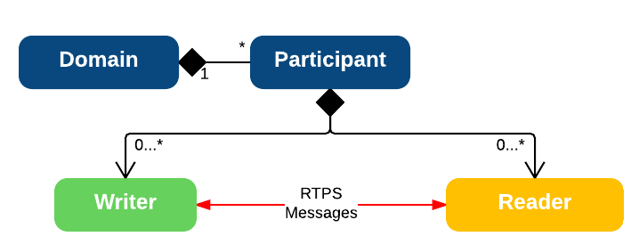
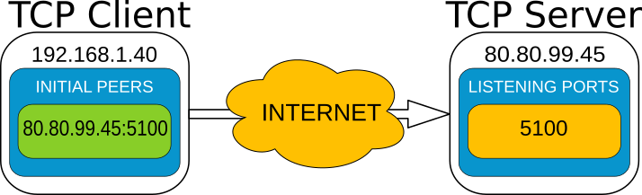

eProsima Fast RTPS Documentation¶
eprosima Fast RTPS is a C++ implementation of the RTPS (Real Time Publish-Subscribe) protocol, which provides publisher-subscriber communications over unreliable transports such as UDP, as defined and maintained by the Object Management Group (OMG) consortium. RTPS is also the wire interoperability protocol defined for the Data Distribution Service (DDS) standard, again by the OMG. eProsima Fast RTPS holds the benefit of being standalone and up-to-date, as most vendor solutions either implement RTPS as a tool to implement DDS or use past versions of the specification.
Some of the main features of this library are:
- Configurable best-effort and reliable publish-subscribe communication policies for real-time applications.
- Plug and play connectivity so that any new applications are automatically discovered by any other members of the network.
- Modularity and scalability to allow continuous growth with complex and simple devices in the network.
- Configurable network behavior and interchangeable transport layer: Choose the best protocol and system input/output channel combination for each deployment.
- Two API Layers: a high-level Publisher-Subscriber one focused on usability and a lower-level Writer-Reader one that provides finer access to the inner workings of the RTPS protocol.
eProsima Fast RTPS has been adopted by multiple organizations in many sectors including these important cases:
- Robotics: ROS (Robotic Operating System) as their default middleware for ROS2.
- EU R&D: FIWARE Incubated GE.
This documentation is organized into the following sections:
Requirements¶
eProsima Fast RTPS requires the following packages to work.
Installation from Binaries¶
You can always download the latest binary release of eProsima Fast RTPS from the company website.
Windows 7 32-bit and 64-bit¶
Execute the installer and follow the instructions, choosing your preferred Visual Studio version and architecture when prompted.
Environmental Variables¶
eProsima Fast RTPS requires the following environmental variable setup in order to function properly
- FASTRTPSHOME: Root folder where eProsima Fast RTPS is installed.
- Additions to the PATH: the /bin folder and the subfolder for your Visual Studio version of choice should be appended to the PATH.
These variables are set automatically by checking the corresponding box during the installation process.
Linux¶
Extract the contents of the package. It will contain both eProsima Fast RTPS and its required package eProsima Fast CDR. You will have to follow the same procedure for both packages, starting with Fast CDR.
Configure the compilation:
$ ./configure --libdir=/usr/lib
If you want to compile with debug symbols (which also enables verbose mode):
$ ./configure CXXFLAGS="-g -D__DEBUG" --libdir=/usr/lib
After configuring the project compile and install the library:
$ sudo make install
Installation from Sources¶
Clone the project from Github:
$ git clone https://github.com/eProsima/Fast-RTPS
$ mkdir Fast-RTPS/build && cd Fast-RTPS/build
If you are on Linux, execute:
$ cmake -DTHIRDPARTY=ON ..
$ make
$ sudo make install
If you are on Windows, choose your version of Visual Studio using CMake option -G:
> cmake -G "Visual Studio 15 2017 Win64" -DTHIRDPARTY=ON ..
> cmake --build . --target install
If you want to compile fastrtpsgen java application, you will need to add the argument -DBUILD_JAVA=ON when
calling CMake (see Compile).
If you want to compile the examples, you will need to add the argument -DCOMPILE_EXAMPLES=ON when calling CMake.
If you want to compile the performance tests, you will need to add the argument -DPERFORMANCE_TESTS=ON when calling
CMake.
For generate fastrtpsgen please see Compile.
Security¶
By default, Fast RTPS doesn’t compile security support. You can activate it adding -DSECURITY=ON at CMake
configuration step.
More information about security on Fast RTPS, see Security.
When security is activated on compilation Fast RTPS builds several built-in security plugins. Some of them have the dependency of OpenSSL library.
OpenSSL installation on Linux¶
Surely you can install OpenSSL using the package manager of your Linux distribution. For example, on Fedora you can install OpenSSL using its package manager with next command.
sudo yum install openssl-devel
OpenSSL installation on Windows¶
You can download OpenSSL 1.0.2 for Windows in this webpage. This is the OpenSSL version tested by our team.
Download and use the installer that fits your requirements. After installing, add the environment variable
OPENSSL_ROOT_DIR pointing to the installation root directory. For example:
OPENSSL_ROOT_DIR=C:\OpenSSL-Win64
Getting Started¶
A brief introduction to the RTPS protocol¶
At the top of RTPS, we find the Domain, which defines a separate plane of communication. Several domains can coexist at the same time independently. A domain contains any number of Participants, elements capable of sending and receiving data. To do this, the participants use their Endpoints:
- Reader: Endpoint able to receive data.
- Writer: Endpoint able to send data.
A Participant can have any number of writer and reader endpoints.
Communication revolves around Topics, which define the data being exchanged. Topics don’t belong to any participant in particular; instead, all interested participants keep track of changes to the topic data and make sure to keep each other up to date. The unit of communication is called a Change, which represents an update to a topic. Endpoints register these changes on their History, a data structure that serves as a cache for recent changes. When you publish a change through a writer endpoint, the following steps happen behind the scenes:
- The change is added to the writer’s history cache.
- The writer informs any readers it knows about.
- Any interested (subscribed) readers request the change.
- After receiving data, readers update their history cache with the new change.
By choosing Quality of Service policies, you can affect how these history caches are managed in several ways, but the communication loop remains the same. You can read more information in Configuration.
Building your first application¶
To build a minimal application, you must first define the topic. To define the data type of the topic Fast-RTPS offers two different approaches, dynamically through Dynamic Topic Types and statically through Interface Definition Language (IDL). In this example, we will define the data type statically with IDL, you have more information about IDL in Introduction.
Write an IDL file containing the specification you want. In this case, a single string is sufficient.
// HelloWorld.idl
struct HelloWorld
{
string msg;
};
Now we need to translate this file to something Fast RTPS understands. For this we have a code generation tool called fastrtpsgen (see Introduction), which can do two different things:
- Generate C++ definitions for your custom topic.
- Optionally, generate a working example that uses your topic data.
You may want to check out the fastrtpsgen user manual, which comes with the distribution of the library. But for now, the following commands will do:
On Linux:
fastrtpsgen -example CMake HelloWorld.idl
On Windows:
fastrtpsgen.bat -example CMake HelloWorld.idl
The -example option creates an example application, and the files needed to build it.
On Linux:
mkdir build && cd build
cmake ..
make
On Windows:
mkdir build && cd build
cmake -G "Visual Studio 15 2017 Win64" ..
cmake --build .
The application build can be used to spawn any number of publishers and subscribers associated with your topic.
On Linux:
./HelloWorldPublisherSubscriber publisher
./HelloWorldPublisherSubscriber subscriber
On Windows:
HelloWorldPublisherSubscriber.exe publisher
HelloWorldPublisherSubscriber.exe subscriber
You may need to set up a special rule in your Firewall for eprosima Fast RTPS to work correctly on Windows.
Each time you press <Enter> on the Publisher, a new datagram is generated, sent over the network and receiver by Subscribers currently online. If more than one subscriber is available, it can be seen that the message is equally received on all listening nodes.
You can modify any values on your custom, IDL-generated data type before sending.
HelloWorld sample; //Auto-generated container class for topic data from FastRTPSGen
sample.msg("Hello there!"); // Add contents to the message
publisher->write(&sample); //Publish
Take a look at the examples/ folder for ideas on how to improve this basic application through different configuration options, and for examples of advanced Fast RTPS features.
Library Overview¶
You can interact with Fast RTPS at two different levels:
- Publisher-Subscriber: Simplified abstraction over RTPS.
- Writer-Reader: Direct control over RTPS endpoints.
In red, the Publisher-Subscriber layer offers a convenient abstraction for most use cases. It allows you to define Publishers and Subscribers associated with a topic, and a simple way to transmit topic data. You may remember this from the example we generated in the “Getting Started” section, where we updated our local copy of the topic data, and called a write() method on it. In blue, the Writer-Reader layer is closer to the concepts defined in the RTPS standard, and allows a finer control, but requires you to interact directly with history caches for each endpoint.
Fast RTPS architecture¶
Threads¶
eProsima Fast RTPS is concurrent and event-based. Each participant spawns a set of threads to take care of background tasks such as logging, message reception, and asynchronous communication. This should not impact the way you use the library: the public API is thread safe, so you can fearlessly call any methods on the same participant from different threads. However, it is still useful to know how Fast RTPS schedules work:
- Main thread: Managed by the application.
- Event thread: Each participant owns one of these, and it processes periodic and triggered events.
- Asynchronous writer thread: This thread manages asynchronous writes for all participants. Even for synchronous writers, some forms of communication must be initiated in the background.
- Reception threads: Participants spawn a thread for each reception channel, where the concept of a channel depends on the transport layer (e.g. a UDP port).
Events¶
There is an event system that enables Fast RTPS to respond to certain conditions, as well as schedule periodic activities. Few of them are visible to the user since most are related to RTPS metadata. However, you can define your own periodic events by inheriting from the TimedEvent class.
Objects and Data Structures¶
In order to make the most of eProsima Fast RTPS it is important to have a grasp of the objects and data structures included in the library. eProsima Fast RTPS objects are classified by modules, which are briefly listed and described in this section. For full coverage take a look at the API Reference document that comes with the distribution.
Publisher-Subscriber Module¶
This module composes the Publisher-Subscriber abstraction we saw in the Library Overview. The concepts here are higher level than the RTPS standard.
DomainUsed to create, manage and destroy high-level Participants.ParticipantContains Publishers and Subscribers, and manages their configuration.ParticipantAttributesConfiguration parameters used in the creation of a Participant.ParticipantListenerAllows you to implement callbacks within the scope of the Participant.
PublisherSends (publishes) data in the form of topic changes.PublisherAttributesConfiguration parameters for the construction of a Publisher.PublisherListenerAllows you to implement callbacks within the scope of the Publisher.
SubscriberReceives data for the topics it subscribes to.SubscriberAttributesConfiguration parameters for the construction of a Subscriber.SubscriberListenerAllows you to implement callbacks within the scope of the Subscriber.
RTPS Module¶
This module directly maps to the ideas defined in the RTPS standard and allows you to interact with RTPS entities directly. It consists of a few sub-modules:
RTPS Common¶
CacheChange_tRepresents a change to a topic, to be stored in a history cache.DataPayload associated with a cache change. It may be empty depending on the message and change type.MessageDefines the organization of an RTPS Message.HeaderStandard header that identifies a message as belonging to the RTPS protocol, and includes the vendor id.Sub-Message HeaderIdentifier for an RTPS sub-message. An RTPS Message can be composed of several sub-messages.MessageReceiverDeserializes and processes received RTPS messages.RTPSMessageCreatorComposes RTPS messages.
RTPS Domain¶
RTPSDomainUse it to create, manage and destroy low-level RTPSParticipants.RTPSParticipantContains RTPS Writers and Readers, and manages their configuration.RTPSParticipantAttributesConfiguration parameters used in the creation of an RTPS Participant.PDPSimpleAllows the participant to become aware of the other participants within the Network, through the Participant Discovery Protocol.EDPSimpleAllows the Participant to become aware of the endpoints (RTPS Writers and Readers) present in the other Participants within the network, through the Endpoint Discovery Protocol.EDPStaticReads information about remote endpoints from a user file.TimedEventBase class for periodic or timed events.
RTPS Reader¶
RTPSReaderBase class for the reader endpoint.ReaderAttributesConfiguration parameters used in the creation of an RTPS Reader.ReaderHistoryHistory data structure. Stores recent topic changes.ReaderListenerUse it to define callbacks in scope of the Reader.
RTPS Writer¶
RTPSWriterBase class for the writer endpoint.WriterAttributesConfiguration parameters used in the creation of an RTPS Writer.WriterHistoryHistory data structure. Stores outgoing topic changes and schedules them to be sent.
Publisher-Subscriber Layer¶
eProsima Fast RTPS provides a high-level Publisher-Subscriber Layer, which is a simple to use abstraction over the RTPS protocol. By using this layer, you can code a straight-to-the-point application while letting the library take care of the lower level configuration.
How to use the Publisher-Subscriber Layer¶
We are going to use the example built in the previous section to explain how this layer works.
The first step is to create a Participant instance, which will act as a container for the Publishers and
Subscribers our application needs. For this we use Domain, a static class that manages RTPS entities.
We also need to pass a configuration structure for the Participant, which can be left in its default configuration for
now:
ParticipantAttributes participant_attr; //Configuration structure
Participant *participant = Domain::createParticipant(participant_attr);
The default configuration provides a basic working set of options with predefined ports for communications. During this tutorial, you will learn to tune eProsima Fast RTPS.
In order to use our topic, we have to register it within the Participant using the code generated with
fastrtpsgen (see Introduction.
Once again, this is done by using the Domain class:
HelloWorldPubSubType m_type; //Auto-generated type from FastRTPSGen
Domain::registerType(participant, &m_type);
Once set up, we instantiate a Publisher within our Participant:
PublisherAttributes publisher_attr; //Configuration structure
PubListener publisher_listener; //Class that implements callbacks from the publisher
Publisher *publisher = Domain::createPublisher(participant, publisher_attr, &publisher_listener);
Once the Publisher is functional, posting data is a simple process:
HelloWorld sample; //Auto-generated container class for topic data from FastRTPSGen
sample.msg("Hello there!"); // Add contents to the message
publisher->write(&sample); //Publish
The Publisher has a set of optional callback functions that are triggered when events happen.
An example is when a Subscriber starts listening to our topic.
To implement these callbacks we create the class PubListener, which inherits from the base class
PublisherListener.
We pass an instance to this class during the creation of the Publisher.
class PubListener : public PublisherListener
{
public:
PubListener() {}
~PubListener() {}
void onPublicationmatched(Publisher* pub, MatchingInfo& info)
{
//Callback implementation. This is called each time the Publisher finds a Subscriber on the network that listens to the same topic.
}
};
The Subscriber creation and implementation are symmetric.
SubscriberAttributes subscriber_attr; //Configuration structure
SubListener subscriber_listener; //Class that implements callbacks from the Subscriber
Subscriber *subscriber = Domain::createSubscriber(participant, subscriber_attr, &subscriber_listener);
Incoming messages are processed within the callback that is called when a new message is received:
class SubListener: public SubscriberListener
{
public:
SubListener() {}
~SubListener() {}
void onNewDataMessage(Subscriber * sub)
{
if(sub->takeNextData((void*)&sample, &sample_info))
{
if(sample_info.sampleKind == ALIVE)
{
std::cout << "New message: " << sample.msg() << std::endl;
}
}
}
HelloWorld sample; //Storage for incoming messages
SampleInfo_t sample_info; //Auxiliary structure with meta-data on the message
};
Configuration¶
eProsima Fast RTPS entities can be configured through the code or XML profiles. This section will show both alternatives.
Participant configuration¶
The Participant can be configured via the ParticipantAttributes structure.
createParticipant function accepts an instance of this structure.
ParticipantAttributes participant_attr;
participant_attr.rtps.setName("my_participant");
participant_attr.rtps.builtin.domainId = 80;
Participant *participant = Domain::createParticipant(participant_attr);
Also, it can be configured through an XML profile.
createParticipant function accepts a name of an XML profile.
Participant *participant = Domain::createParticipant("participant_xml_profile");
About XML profiles you can learn more in XML profiles. This is an example of a participant XML profile.
<participant profile_name="participant_xml_conf_profile">
<rtps>
<name>my_participant</name>
<builtin>
<domainId>80</domainId>
</builtin>
</rtps>
</participant>
We will now go over the most common configuration options.
Participant name: the name of the
Participantforms part of the meta-data of the RTPS protocol.C++ participant_attr.rtps.setName("my_participant");
XML <participant profile_name="participant_xml_conf_name_profile"> <rtps> <name>my_participant</name> </rtps> </participant>
DomainId: Publishers and Subscribers can only talk to each other if their Participants belong to the same DomainId.
C++ participant_attr.rtps.builtin.domainId = 80;
XML <participant profile_name="participant_xml_conf_domain_profile"> <rtps> <builtin> <domainId>80</domainId> </builtin> </rtps> </participant>
Publisher and Subscriber configuration¶
The Publisher can be configured via the PublisherAttributes structure and
createPublisher function accepts an instance of this structure. The Subscriber can be configured via the
SubscriberAttributes structure and createSubscriber function accepts an instance of this structure.
PublisherAttributes publisher_attr;
Publisher *publisher = Domain::createPublisher(participant, publisher_attr);
SubscriberAttributes subscriber_attr;
Subscriber *subscriber = Domain::createSubscriber(participant, subscriber_attr);
Also, these entities can be configured through an XML profile. createPublisher and createSubscriber functions
accept the name of an XML profile.
Publisher *publisher = Domain::createPublisher(participant, "publisher_xml_profile");
Subscriber *subscriber = Domain::createSubscriber(participant, "subscriber_xml_profile");
We will now go over the most common configuration options.
Topic information¶
The topic name and data type are used as meta-data to determine whether Publishers and Subscribers can exchange messages.
| C++ |
publisher_attr.topic.topicDataType = "HelloWorldType";
publisher_attr.topic.topicName = "HelloWorldTopic";
subscriber_attr.topic.topicDataType = "HelloWorldType";
subscriber_attr.topic.topicName = "HelloWorldTopic";
|
| XML |
<publisher profile_name="publisher_xml_conf_topic_profile">
<topic>
<dataType>HelloWorldType</dataType>
<name>HelloWorldTopic</name>
</topic>
</publisher>
<subscriber profile_name="subscriber_xml_conf_topic_profile">
<topic>
<dataType>HelloWorldType</dataType>
<name>HelloWorldTopic</name>
</topic>
</subscriber>
|
Reliability¶
The RTPS standard defines two behavior modes for message delivery:
- Best-Effort (default): Messages are sent without arrival confirmation from the receiver (subscriber). It is fast, but messages can be lost.
- Reliable: The sender agent (publisher) expects arrival confirmation from the receiver (subscriber). It is slower but prevents data loss.
| C++ |
publisher_attr.qos.m_reliability.kind = RELIABLE_RELIABILITY_QOS;
subscriber_attr.qos.m_reliability.kind = BEST_EFFORT_RELIABILITY_QOS;
|
| XML |
<publisher profile_name="publisher_xml_conf_reliability_profile">
<qos>
<reliability>
<kind>RELIABLE</kind>
</reliability>
</qos>
</publisher>
<subscriber profile_name="subscriber_xml_conf_reliability_profile">
<qos>
<reliability>
<kind>BEST_EFFORT</kind>
</reliability>
</qos>
</subscriber>
|
Some reliability combinations make a publisher and a subscriber incompatible and unable to talk to each other. Next table shows the incompatibilities.
| Publisher \ Subscriber | Best Effort | Reliable |
| Best Effort | ✓ | ✕ |
| Reliable | ✓ | ✓ |
History¶
There are two policies for sample storage:
- Keep-All: Store all samples in memory.
- Keep-Last (Default): Store samples up to a maximum depth. When this limit is reached, they start to become overwritten.
| C++ |
publisher_attr.topic.historyQos.kind = KEEP_ALL_HISTORY_QOS;
subscriber_attr.topic.historyQos.kind = KEEP_LAST_HISTORY_QOS;
subscriber_attr.topic.historyQos.depth = 5;
|
| XML |
<publisher profile_name="publisher_xml_conf_history_profile">
<topic>
<historyQos>
<kind>KEEP_ALL</kind>
</historyQos>
</topic>
</publisher>
<subscriber profile_name="subscriber_xml_conf_history_profile">
<topic>
<historyQos>
<kind>KEEP_LAST</kind>
<depth>5</depth>
</historyQos>
</topic>
</subscriber>
|
Durability¶
Durability configuration of the endpoint defines how it behaves regarding samples that existed on the topic before a subscriber joins
- Volatile: Past samples are ignored, a joining subscriber receives samples generated after the moment it matches.
- Transient Local (Default): When a new subscriber joins, its History is filled with past samples.
- Transient: When a new subscriber joins, its History is filled with past samples, which are stored on persistent storage (see Persistence).
| C++ |
publisher_attr.qos.m_durability.kind = TRANSIENT_LOCAL_DURABILITY_QOS;
subscriber_attr.qos.m_durability.kind = VOLATILE_DURABILITY_QOS;
|
| XML |
<publisher profile_name="publisher_xml_conf_durability_profile">
<qos>
<durability>
<kind>TRANSIENT_LOCAL</kind>
</durability>
</qos>
</publisher>
<subscriber profile_name="subscriber_xml_conf_durability_profile">
<qos>
<durability>
<kind>VOLATILE</kind>
</durability>
</qos>
</subscriber>
|
Resource limits¶
Allow controlling the maximum size of the History and other resources.
| C++ |
publisher_attr.topic.resourceLimitsQos.max_samples = 200;
subscriber_attr.topic.resourceLimitsQos.max_samples = 200;
|
| XML |
<publisher profile_name="publisher_xml_conf_resource_limits_profile">
<topic>
<resourceLimitsQos>
<max_samples>200</max_samples>
</resourceLimitsQos>
</topic>
</publisher>
<subscriber profile_name="subscriber_xml_conf_resource_limits_profile">
<topic>
<resourceLimitsQos>
<max_samples>200</max_samples>
</resourceLimitsQos>
</topic>
</subscriber>
|
Unicast locators¶
They are network endpoints where the entity will receive data. For more information about the network, see Transports. Publishers and subscribers inherit unicast locators from the participant. You can set a different set of locators through this attribute.
| C++ |
Locator_t new_locator;
new_locator.port = 7800;
subscriber_attr.unicastLocatorList.push_back(new_locator);
publisher_attr.unicastLocatorList.push_back(new_locator);
|
| XML |
<publisher profile_name="publisher_xml_conf_unicast_locators_profile">
<unicastLocatorList>
<locator>
<udpv4>
<port>7800</port>
</udpv4>
</locator>
</unicastLocatorList>
</publisher>
<subscriber profile_name="subscriber_xml_conf_unicast_locators_profile">
<unicastLocatorList>
<locator>
<udpv4>
<port>7800</port>
</udpv4>
</locator>
</unicastLocatorList>
</subscriber>
|
Multicast locators¶
They are network endpoints where the entity will receive data. For more information about network configuration, see Transports. By default publishers and subscribers don’t use any multicast locator. This attribute is useful when you have a lot of entities and you want to reduce the network usage.
| C++ |
Locator_t new_locator;
IPLocator::setIPv4(new_locator, "239.255.0.4");
new_locator.port = 7900;
subscriber_attr.multicastLocatorList.push_back(new_locator);
publisher_attr.multicastLocatorList.push_back(new_locator);
|
| XML |
<publisher profile_name="publisher_xml_conf_multicast_locators_profile">
<multicastLocatorList>
<locator>
<udpv4>
<address>239.255.0.4</address>
<port>7900</port>
</udpv4>
</locator>
</multicastLocatorList>
</publisher>
<subscriber profile_name="subscriber_xml_conf_multicast_locators_profile">
<multicastLocatorList>
<locator>
<udpv4>
<address>239.255.0.4</address>
<port>7900</port>
</udpv4>
</locator>
</multicastLocatorList>
</subscriber>
|
Additional Concepts¶
Using message meta-data¶
When a message is taken from the Subscriber, an auxiliary SampleInfo_t structure instance is also returned.
| Static types |
HelloWorld sample;
SampleInfo_t sample_info;
subscriber->takeNextData((void*)&sample, &sample_info);
|
| Dynamic types |
// input_type is an instance of DynamicPubSubType of out current dynamic type
DynamicPubSubType *pst = dynamic_cast<DynamicPubSubType*>(input_type);
DynamicData *sample = DynamicDataFactory::GetInstance()->CreateData(pst->GetDynamicType());
subscriber->takeNextData(sample, &sample_info);
|
This SampleInfo_t structure contains meta-data on the incoming message:
- sampleKind: type of the sample, as defined by the RTPS Standard. Healthy messages from a topic are always ALIVE.
- WriterGUID: Signature of the sender (Publisher) the message comes from.
- OwnershipStrength: When several senders are writing the same data, this field can be used to determine which data is more reliable.
- SourceTimestamp: A timestamp on the sender side that indicates the moment the sample was encapsulated and sent.
This meta-data can be used to implement filters:
if( (sample_info.sampleKind == ALIVE) & (sample_info.ownershipStrength > 25) )
{
//Process data
}
Defining callbacks¶
As we saw in the example, both the Publisher and Subscriber have a set of callbacks you can use
in your application. These callbacks are to be implemented within classes that derive from
SubscriberListener or PublisherListener. The following table gathers information about
the possible callbacks that can be implemented in both cases:
| Callback | Publisher | Subscriber |
|---|---|---|
| onNewDataMessage | N | Y |
| onSubscriptionMatched | N | Y |
| onPublicationMatched | Y | N |
Writer-Reader Layer¶
The lower level Writer-Reader Layer of eprosima Fast RTPS provides a raw implementation of the RTPS protocol. It provides more control over the internals of the protocol than the Publisher-Subscriber layer. Advanced users can make use of this layer directly to gain more control over the functionality of the library.
Relation to the Publisher-Subscriber Layer¶
Elements of this layer map one-to-one with elements from the Publisher-Subscriber Layer, with a few additions. The following table shows the name correspondence between layers:
Publisher-Subscriber Layer Writer-Reader Layer Domain RTPSDomain Participant RTPSParticipant Publisher RTPSWriter Subscriber RTPSReader
How to use the Writer-Reader Layer¶
We will now go over the use of the Writer-Reader Layer like we did with the Publish-Subscriber one, explaining the new features it presents.
We recommend you to look at the two examples of how to use this layer the distribution comes with while reading this section. They are located in examples/RTPSTest_as_socket and in examples/RTPSTest_registered
Managing the Participant¶
To create a RTPSParticipant, the process is very similar to the one shown in the Publisher-Subscriber layer.
RTPSParticipantAttributes participant_attr;
participant_attr.setName("participant");
RTPSParticipant* participant = RTPSDomain::createParticipant(participant_attr);
The RTPSParticipantAttributes structure is equivalent to the rtps member of ParticipantAttributes
field in the Publisher-Subscriber Layer, so you can configure your RTPSParticipant the same way as before:
RTPSParticipantAttributes participant_attr;
participant_attr.setName("my_participant");
//etc.
Managing the Writers and Readers¶
As the RTPS standard specifies, Writers and Readers are always associated with a History element. In the Publisher-Subscriber Layer, its creation and management is hidden, but in the Writer-Reader Layer, you have full control over its creation and configuration.
Writers are configured with a WriterAttributes structure.
They also need a WriterHistory which is configured with a HistoryAttributes structure.
HistoryAttributes history_attr;
WriterHistory* history = new WriterHistory(history_attr);
WriterAttributes writer_attr;
RTPSWriter* writer = RTPSDomain::createRTPSWriter(participant, writer_attr, history);
The creation of a Reader is similar.
Note that in this case, you can provide a ReaderListener instance that implements your callbacks:
class MyReaderListener : public ReaderListener{};
MyReaderListener listener;
HistoryAttributes history_attr;
ReaderHistory* history = new ReaderHistory(history_attr);
ReaderAttributes reader_attr;
RTPSReader* reader = RTPSDomain::createRTPSReader(participant, reader_attr, history, &listener);
Using the History to Send and Receive Data¶
In the RTPS Protocol, Readers and Writers save the data about a topic in their associated History.
Each piece of data is represented by a Change, which eprosima Fast RTPS implements as CacheChange_t.
Changes are always managed by the History. As a user, the procedure for interacting with the History is always the same:
- Request a
CacheChange_tfrom the History - Use it
- Release it
You can interact with the History of the Writer to send data. A callback that returns the maximum number of payload bytes is required:
//Request a change from the history
CacheChange_t* change = writer->new_change([]() -> uint32_t { return 255;}, ALIVE);
//Write serialized data into the change
change->serializedPayload.length = sprintf((char*) change->serializedPayload.data, "My example string %d", 2)+1;
//Insert change back into the history. The Writer takes care of the rest.
history->add_change(change);
If your topic data type has several fields, you will have to provide functions to serialize and deserialize
your data in and out of the CacheChange_t.
FastRTPSGen does this for you.
You can receive data from within a ReaderListener callback method as we did in the Publisher-Subscriber Layer:
class MyReaderListener: public ReaderListener
{
public:
MyReaderListener(){}
~MyReaderListener(){}
void onNewCacheChangeAdded(RTPSReader* reader,const CacheChange_t* const change)
{
// The incoming message is enclosed within the `change` in the function parameters
printf("%s\n",change->serializedPayload.data);
// Once done, remove the change
reader->getHistory()->remove_change((CacheChange_t*)change);
}
};
Configuring Readers and Writers¶
One of the benefits of using the Writer-Reader layer is that it provides new configuration possibilities while maintaining the options from the Publisher-Subscriber layer (see Configuration). For example, you can set a Writer or a Reader as a Reliable or Best-Effort endpoint as previously:
writer_attr.endpoint.reliabilityKind = BEST_EFFORT;
Setting the data durability kind¶
The Durability parameter defines the behavior of the Writer regarding samples already sent when a new Reader matches. eProsima Fast RTPS offers three Durability options:
- VOLATILE (default): Messages are discarded as they are sent. If a new Reader matches after message n, it will start received from message n+1.
- TRANSIENT_LOCAL: The Writer saves a record of the last k messages it has sent. If a new reader matches after message n, it will start receiving from message n-k
- TRANSIENT: As TRANSIENT_LOCAL, but the record of messages will be saved to persistent storage, so it will be available if the writer is destroyed and recreated, or in case of an application crash (see Persistence)
To choose your preferred option:
writer_attr.endpoint.durabilityKind = TRANSIENT_LOCAL;
Because in the Writer-Reader layer you have control over the History, in TRANSIENT_LOCAL and TRANSIENT modes the Writer sends all changes you have not explicitly released from the History.
Configuring the History¶
The History has its own configuration structure, the HistoryAttributes.
Changing the maximum size of the payload¶
You can choose the maximum size of the Payload that can go into a CacheChange_t.
Be sure to choose a size that allows it to hold the biggest possible piece of data:
history_attr.payloadMaxSize = 250; //Defaults to 500 bytes
Changing the size of the History¶
You can specify a maximum amount of changes for the History to hold and an initial amount of allocated changes:
history_attr.initialReservedCaches = 250; //Defaults to 500
history_attr.maximumReservedCaches = 500; //Defaults to 0 = Unlimited Changes
When the initial amount of reserved changes is lower than the maximum, the History will allocate more changes as they are needed until it reaches the maximum size.
Advanced Functionalities¶
This section covers slightly more advanced, but useful features that enrich your implementation.
Topics and Keys¶
The RTPS standard contemplates the use of keys to define multiple data sources/sinks within a single topic.
There are three ways of implementing keys into your topic:
- Defining a @Key field in the IDL file when using FastRTPSGen (see the examples that come with the distribution).
- Manually implementing and using a
getKey()method. - Adding the attribute Key to the member and its parents when using dynamic types (see Dynamic Topic Types).
Publishers and Subscribers using topics with keys must be configured to use them, otherwise, they will have no effect:
| C++ |
// Publisher-Subscriber Layer configuration.
publisher_attr.topic.topicKind = WITH_KEY;
|
| XML |
<publisher profile_name="publisher_profile_qos_key">
<topic>
<kind>WITH_KEY</kind>
</topic>
</publisher>
|
The RTPS Layer requires you to call the getKey() method manually within your callbacks.
You can tweak the History to accommodate data from multiple keys based on your current configuration. This consist of defining a maximum number of data sinks and a maximum size for each sink:
| C++ |
// Set the subscriber to remember and store up to 3 different keys.
subscriber_attr.topic.resourceLimitsQos.max_instances = 3;
// Hold a maximum of 20 samples per key.
subscriber_attr.topic.resourceLimitsQos.max_samples_per_instance = 20;
|
| XML |
<subscriber profile_name="subscriber_profile_qos_resourcelimit">
<topic>
<resourceLimitsQos>
<max_instances>3</max_instances>
<max_samples_per_instance>20</max_samples_per_instance>
</resourceLimitsQos>
</topic>
</subscriber>
|
Note that your History must be big enough to accommodate the maximum number of samples for each key. eProsima Fast RTPS will notify you if your History is too small.
Transports¶
eProsima Fast RTPS implements an architecture of pluggable transports.
Current version implements four transports: UDPv4, UDPv6, TCPv4 and TCPv6.
By default, when a Participant is created, one built-in UDPv4 transport is configured.
You can add custom transports using the attribute rtps.userTransports.
| C++ |
//Create a descriptor for the new transport.
auto custom_transport = std::make_shared<UDPv4TransportDescriptor>();
custom_transport->sendBufferSize = 9216;
custom_transport->receiveBufferSize = 9216;
//Disable the built-in Transport Layer.
participant_attr.rtps.useBuiltinTransports = false;
//Link the Transport Layer to the Participant.
participant_attr.rtps.userTransports.push_back(custom_transport);
|
| XML |
<transport_descriptors>
<transport_descriptor>
<transport_id>my_transport</transport_id>
<type>UDPv4</type>
<sendBufferSize>9216</sendBufferSize>
<receiveBufferSize>9216</receiveBufferSize>
</transport_descriptor>
</transport_descriptors>
<participant profile_name="my_transport">
<rtps>
<userTransports>
<transport_id>my_transport</transport_id>
</userTransports>
<useBuiltinTransports>false</useBuiltinTransports>
</rtps>
</participant>
|
All Transport configuration options can be found in the section Transport descriptors.
TCP Transport¶
Unlike UDP, TCP transport is connection oriented and for that Fast-RTPS must establish a TCP connection before sending the RTPS messages. Therefore TCP transport can have two behaviors, acting as a server (TCP Server) or as a client (TCP Client). The server opens a TCP port listening for incoming connections and the client tries to connect to the server. The server and the client concepts are independent from the RTPS concepts: Publisher, Subscriber, Writer, and Reader. Any of them can operate as a TCP Server or a TCP Client because these entities are used only to establish the TCP connection and the RTPS protocol works over it.
To use TCP transports you need to define some more configurations:
You must create a new TCP transport descriptor, for example TCPv4.
This transport descriptor has a field named listening_ports that indicates to Fast-RTPS
in which physical TCP ports our participant will listen for input connections.
If omitted, the participant will not be able to receive incoming connections but will be able
to connect to other participants that have configured their listening ports.
The transport must be added to the userTransports list of the participant attributes.
The field wan_addr can be used to allow incoming connections using the public IP in a WAN environment or the
Internet.
See WAN or Internet Communication over TCP/IPv4 for more information about how to configure a TCP Transport
to allow or connect to WAN connections.
| C++ |
//Create a descriptor for the new transport.
auto tcp_transport = std::make_shared<TCPv4TransportDescriptor>();
tcp_transport->add_listener_port(5100);
tcp_transport->set_WAN_address("80.80.99.45");
//Disable the built-in Transport Layer.
participant_attr.rtps.useBuiltinTransports = false;
//Link the Transport Layer to the Participant.
participant_attr.rtps.userTransports.push_back(tcp_transport);
|
| XML |
<transport_descriptors>
<transport_descriptor>
<transport_id>tcp_transport</transport_id>
<type>TCPv4</type>
<listening_ports>
<port>5100</port>
</listening_ports>
<wan_addr>80.80.99.45</wan_addr>
</transport_descriptor>
</transport_descriptors>
<participant profile_name="TCPParticipant">
<rtps>
<userTransports>
<transport_id>tcp_transport</transport_id>
</userTransports>
<useBuiltinTransports>false</useBuiltinTransports>
</rtps>
</participant>
|
To configure the participant to connect to another node through TCP, you must configure and add a Locator to its
initialPeersList that points to the remote listening port.
| C++ |
auto tcp2_transport = std::make_shared<TCPv4TransportDescriptor>();
//Disable the built-in Transport Layer.
participant_attr.rtps.useBuiltinTransports = false;
//Set initial peers.
Locator_t initial_peer_locator;
initial_peer_locator.kind = LOCATOR_KIND_TCPv4;
IPLocator::setIPv4(initial_peer_locator, "80.80.99.45");
initial_peer_locator.port = 5100;
participant_attr.rtps.builtin.initialPeersList.push_back(initial_peer_locator);
//Link the Transport Layer to the Participant.
participant_attr.rtps.userTransports.push_back(tcp2_transport);
|
| XML |
<transport_descriptors>
<transport_descriptor>
<transport_id>tcp2_transport</transport_id>
<type>TCPv4</type>
</transport_descriptor>
</transport_descriptors>
<participant profile_name="TCP2Participant">
<rtps>
<userTransports>
<transport_id>tcp2_transport</transport_id>
</userTransports>
<builtin>
<initialPeersList>
<locator>
<tcpv4>
<address>80.80.99.45</address>
<physical_port>5100</physical_port>
</tcpv4>
</locator>
</initialPeersList>
</builtin>
<useBuiltinTransports>false</useBuiltinTransports>
</rtps>
</participant>
|
A TCP version of helloworld example can be found in this link.
WAN or Internet Communication over TCP/IPv4¶
Fast-RTPS is able to connect through the Internet or other WAN networks when configured properly. To achieve this kind of scenarios, the involved network devices such as routers and firewalls should add the rules to allow the communication.
For example, to allow incoming connections through our NAT, Fast-RTPS must be configured as a TCP Server listening
to incoming TCP connections.
To allow incoming connections through a WAN, the TCP descriptor associated must indicate
its public IP through its field wan_addr.
| C++ |
//Create a descriptor for the new transport.
auto tcp_transport = std::make_shared<TCPv4TransportDescriptor>();
tcp_transport->add_listener_port(5100);
tcp_transport->set_WAN_address("80.80.99.45");
//Disable the built-in Transport Layer.
participant_attr.rtps.useBuiltinTransports = false;
//Link the Transport Layer to the Participant.
participant_attr.rtps.userTransports.push_back(tcp_transport);
|
| XML |
<transport_descriptors>
<transport_descriptor>
<transport_id>tcp_transport</transport_id>
<type>TCPv4</type>
<listening_ports>
<port>5100</port>
</listening_ports>
<wan_addr>80.80.99.45</wan_addr>
</transport_descriptor>
</transport_descriptors>
<participant profile_name="TCPParticipant">
<rtps>
<userTransports>
<transport_id>tcp_transport</transport_id>
</userTransports>
<useBuiltinTransports>false</useBuiltinTransports>
</rtps>
</participant>
|
In this case, configuring the router (which public IP is 80.80.99.45) is mandatory to allow the incoming traffic to
reach the TCP Server.
Typically a NAT routing with the listening_port 5100 to our machine is enough.
Any existing firewall should be configured as well.
In the client side, it is needed to specify the public IP of the TCP Server with its listening_port as
initial_peer.
| C++ |
auto tcp2_transport = std::make_shared<TCPv4TransportDescriptor>();
//Disable the built-in Transport Layer.
participant_attr.rtps.useBuiltinTransports = false;
//Set initial peers.
Locator_t initial_peer_locator;
initial_peer_locator.kind = LOCATOR_KIND_TCPv4;
IPLocator::setIPv4(initial_peer_locator, "80.80.99.45");
initial_peer_locator.port = 5100;
participant_attr.rtps.builtin.initialPeersList.push_back(initial_peer_locator);
//Link the Transport Layer to the Participant.
participant_attr.rtps.userTransports.push_back(tcp2_transport);
|
| XML |
<transport_descriptors>
<transport_descriptor>
<transport_id>tcp2_transport</transport_id>
<type>TCPv4</type>
</transport_descriptor>
</transport_descriptors>
<participant profile_name="TCP2Participant">
<rtps>
<userTransports>
<transport_id>tcp2_transport</transport_id>
</userTransports>
<builtin>
<initialPeersList>
<locator>
<tcpv4>
<address>80.80.99.45</address>
<physical_port>5100</physical_port>
</tcpv4>
</locator>
</initialPeersList>
</builtin>
<useBuiltinTransports>false</useBuiltinTransports>
</rtps>
</participant>
|
The combination of the above configurations in both TCP Server and TCP Client allows a scenario similar to the represented by the following image.
IPLocator
IPLocator is an auxiliary static class that offers methods to ease the management of IP based locators, as UDP or TCP. In TCP, the port field of the locator is divided into physical and logical port. The physical port is the port used by the network device, the real port that the operating system understands. The logical port can be seen as RTPS port, or UDP’s equivalent port (physical ports of UDP, are logical ports in TCP). Logical ports normally are not necessary to manage explicitly, but you can do it through IPLocator class. Physical ports instead, must be set to explicitly use certain ports, to allow the communication through a NAT, for example.
Locator_t locator;
// Get & Set Physical Port
uint16_t physical_port = IPLocator::getPhysicalPort(locator);
IPLocator::setPhysicalPort(locator, 5555);
// Get & Set Logical Port
uint16_t logical_port = IPLocator::getLogicalPort(locator);
IPLocator::setLogicalPort(locator, 7400);
// Set WAN Address
IPLocator::setWan(locator, "80.88.75.55");
NOTE
TCP doesn’t support multicast scenarios, so you must plan carefully your network architecture.
Listening locators¶
eProsima Fast RTPS divides listening locators into four categories:
Metatraffic Multicast Locators: these locators are used to receive metatraffic information using multicast. They usually are used by built-in endpoints, like the discovery of built-in endpoints. You can set your own locators using attribute
rtps.builtin.metatrafficMulticastLocatorList.// This locator will open a socket to listen network messages on UDPv4 port 22222 over multicast address 239.255.0.1 eprosima::fastrtps::rtps::Locator_t locator; IPLocator::setIPv4(locator, 239, 255, 0 , 1); locator.port = 22222; participant_attr.rtps.builtin.metatrafficMulticastLocatorList.push_back(locator);
Metatraffic Unicast Locators: these locators are used to receive metatraffic information using unicast. They usually are used by built-in endpoints, like the discovery of built-in endpoints. You can set your own locators using attribute
rtps.builtin.metatrafficUnicastLocatorList.// This locator will open a socket to listen network messages on UDPv4 port 22223 over network interface 192.168.0.1 eprosima::fastrtps::rtps::Locator_t locator; IPLocator::setIPv4(locator, 192, 168, 0 , 1); locator.port = 22223; participant_attr.rtps.builtin.metatrafficUnicastLocatorList.push_back(locator);
User Multicast Locators: these locators are used to receive user information using multicast. They are used by user endpoints. You can set your own locators using attribute
rtps.defaultMulticastLocatorList.// This locator will open a socket to listen network messages on UDPv4 port 22224 over multicast address 239.255.0.1 eprosima::fastrtps::rtps::Locator_t locator; IPLocator::setIPv4(locator, 239, 255, 0 , 1); locator.port = 22224; participant_attr.rtps.defaultMulticastLocatorList.push_back(locator);
User Unicast Locators: these locators are used to receive user information using unicast. They are used by user endpoints. You can set your own locators using attributes
rtps.defaultUnicastLocatorList.// This locator will open a socket to listen network messages on UDPv4 port 22225 over network interface 192.168.0.1 eprosima::fastrtps::rtps::Locator_t locator; IPLocator::setIPv4(locator, 192, 168, 0 , 1); locator.port = 22225; participant_attr.rtps.defaultUnicastLocatorList.push_back(locator);
By default eProsima Fast RTPS calculates the listening locators for the built-in UDPv4 network transport using well-known ports. These well-known ports are calculated using the following predefined rules:
| Traffic type | Well-known port expression |
|---|---|
| Metatraffic multicast | PB + DG * domainId + offsetd0 |
| Metatraffic unicast | PB + DG * domainId + offsetd1 + PG * participantId |
| User multicast | PB + DG * domainId + offsetd2 |
| User unicast | PB + DG * domainId + offsetd3 + PG * participantId |
These predefined rules use some values explained here:
- DG: DomainId Gain. You can set this value using attribute
rtps.port.domainIDGain. The default value is250. - PG: ParticipantId Gain. You can set this value using attribute
rtps.port.participantIDGain. The default value is2. - PB: Port Base number. You can set this value using attribute
rtps.port.portBase. The default value is7400. - offsetd0, offsetd1, offsetd2, offsetd3: Additional offsets.
You can set these values using attributes
rtps.port.offsetdN. Default values are:offsetd0 = 0,offsetd1 = 10,offsetd2 = 1,offsetd3 = 11.
Both UDP and TCP unicast locators support to have a null address. In that case, eProsima Fast RTPS understands to get local network addresses and use them.
Both UDP and TCP locators support to have a zero port. In that case, eProsima Fast RTPS understands to calculate well-known port for that type of traffic.
Initial peers¶
These locators are used to know where to send initial discovery network messages. You can set your own locators using
attribute rtps.builtin.initialPeersList. By default eProsima Fast RTPS uses as initial peers the Metatraffic
Multicast Locators.
// This locator configures as initial peer the UDPv4 address 192.168.0.2:7600.
// Initial discovery network messages will send to this UDPv4 address.
eprosima::fastrtps::rtps::Locator_t locator;
IPLocator::setIPv4(locator, "192.168.0.2");
locator.port = 7600;
participant_attr.rtps.builtin.initialPeersList.push_back(locator);
Whitelist Interfaces¶
There could be situations where you want to block some network interfaces to avoid connections or sending data through them. This can be managed using the field interface whitelist in the transport descriptors, and with them, you can set the interfaces you want to use to send or receive packets. The values on this list should match the IPs of your machine in that networks. For example:
| C++ |
UDPv4TransportDescriptor descriptor;
descriptor.interfaceWhiteList.emplace_back("127.0.0.1");
|
| XML |
<transport_descriptors>
<transport_descriptor>
<transport_id>CustomTransport</transport_id>
<type>UDPv4</type>
<interfaceWhiteList>
<address>127.0.0.1</address>
</interfaceWhiteList>
</transport_descriptor>
<type>UDPv4</type>
|
Tips¶
Disabling all multicast traffic
| C++ |
// Metatraffic Multicast Locator List will be empty.
// Metatraffic Unicast Locator List will contain one locator, with null address and null port.
// Then eProsima Fast RTPS will use all network interfaces to receive network messages using a well-known port.
Locator_t default_unicast_locator;
participant_attr.rtps.builtin.metatrafficUnicastLocatorList.push_back(default_unicast_locator);
// Initial peer will be UDPv4 addresss 192.168.0.1. The port will be a well-known port.
// Initial discovery network messages will be sent to this UDPv4 address.
Locator_t initial_peer;
IPLocator::setIPv4(initial_peer, 192, 168, 0, 1);
participant_attr.rtps.builtin.initialPeersList.push_back(initial_peer);
|
| XML |
<participant profile_name="disable_multicast" is_default_profile="true">
<rtps>
<builtin>
<metatrafficUnicastLocatorList>
<locator/>
</metatrafficUnicastLocatorList>
<initialPeersList>
<locator>
<udpv4>
<address>192.168.0.1</address>
</udpv4>
</locator>
</initialPeersList>
</builtin>
</rtps>
</participant>
|
XML Configuration
The XML profiles section contains the full information about how to setup Fast RTPS through an XML file.
Flow Controllers¶
eProsima Fast RTPS supports user configurable flow controllers on a Publisher and Participant level. These controllers can be used to limit the amount of data to be sent under certain conditions depending on the kind of controller implemented.
The current release implement throughput controllers, which can be used to limit the total message throughput to be sent over the network per time measurement unit. In order to use them, a descriptor must be passed into the Participant or Publisher Attributes.
| C++ |
// Limit to 300kb per second.
ThroughputControllerDescriptor slowPublisherThroughputController{300000, 1000};
publisher_attr.throughputController = slowPublisherThroughputController;
|
| XML |
<publisher profile_name="publisher_profile_qos_flowcontroller">
<throughputController>
<bytesPerPeriod>300000</bytesPerPeriod>
<periodMillisecs>1000</periodMillisecs>
</throughputController>
</publisher>
|
In the Writer-Reader layer, the throughput controller is built-in and the descriptor defaults to infinite throughput. To change the values:
WriterAttributes writer_attr;
writer_attr.throughputController.bytesPerPeriod = 300000; //300kb
writer_attr.throughputController.periodMillisecs = 1000; //1000ms
//CONF-QOS-PUBLISHMODE
// Allows fragmentation.
publisher_attr.qos.m_publishMode.kind = ASYNCHRONOUS_PUBLISH_MODE;
Note that specifying a throughput controller with a size smaller than the socket size can cause messages to never become sent.
Sending large data¶
The default message size eProsima Fast RTPS uses is a conservative value of 65Kb. If your topic data is bigger, it must be fragmented.
Fragmented messages are sent over multiple packets, as understood by the particular transport layer. To make this possible, you must configure the Publisher to work in asynchronous mode.
| C++ |
// Allows fragmentation.
publisher_attr.qos.m_publishMode.kind = ASYNCHRONOUS_PUBLISH_MODE;
|
| XML |
<publisher profile_name="publisher_profile_qos_publishmode">
<qos>
<publishMode>
<kind>ASYNCHRONOUS</kind>
</publishMode>
</qos>
</publisher>
|
In the Writer-Subscriber layer, you have to configure the Writer:
WriterAttributes write_attr;
write_attr.mode = ASYNCHRONOUS_WRITER; // Allows fragmentation
Note that in best-effort mode messages can be lost if you send big data too fast and the buffer is filled at a faster rate than what the client can process messages. On the other hand, in reliable mode, the existence of a lot of data fragments could decrease the frequency at which messages are received. If this happens, it can be resolved by increasing socket buffers size, as described in Increasing socket buffers size. It can also help to set a lower Heartbeat period in reliable mode, as stated in Tuning Reliable mode.
When you are sending large data, it is convenient to setup a flow controller to avoid a burst of messages in the network and increase performance. See Flow Controllers
Example: Sending a unique large file¶
This is a proposed example of how should the user configure its application in order to achieve the best performance. To make this example more tangible, it is going to be supposed that the file has a size of 9.9MB and the network in which the publisher and the subscriber are operating has a bandwidth of 100MB/s
First of all, the asynchronous mode has to be activated in the publisher parameters. Then, a suitable reliability mode has to be selected. In this case, it is important to make sure that all fragments of the message are received. The loss of a fragment means the loss of the entire message, so it would be best to choose the reliable mode.
The default message size of this fragments using the UDPv4 transport has a value of 65Kb (which includes the space reserved for the data and the message header). This means that the publisher would have to write at least about 1100 fragments.
This amount of fragment could slow down the transmission, so it could be interesting to decrease the heartbeat period in order to increase the reactivity of the publisher.
Another important consideration is the addition of a flow controller. Without a flow controller, the publisher can occupy the entire bandwidth. A reasonable flow controller for this application could be a limit of 5MB/s, which represents only 5% of the total bandwidth. Anyway, these values are highly dependent on the specific application and its desired behavior.
At last, there is another detail to have in mind: it is critical to check the size of the system UDP buffers. In Linux, buffers can be enlarged with
sysctl -w net.ipv4.udp_mem="102400 873800 16777216"
sysctl -w net.core.netdev_max_backlog="30000"
sysctl -w net.core.rmem_max="16777216"
sysctl -w net.core.wmem_max="16777216"
Example: Video streaming¶
In this example, the target application transmits video between a publisher and a subscriber. This video will have a resolution of 640x480 and a frequency of 50fps.
As in the previous example, since the application is sending data that requires fragmentation, the asynchronous mode has to be activated in the publisher parameters.
In audio or video transmissions, sometimes is better to have a stable and high datarate feed than a 100% lossless communication. Working with a frequency of 50Hz makes insignificant the loss of one or two samples each second. Thus, for a higher performance, it can be appropriate to configure the reliability mode to best-effort.
Discovery¶
Fast RTPS provides a discovery mechanism that allows matching automatically publishers and subscribers. The discovery mechanism is divided into two phases: Participant Discovery Phase and Endpoints Discovery Phase.
- Participant Discovery Phase (PDP)
- Before discovering any entity of a remote participant, both participants have to meet between them. Participant Discovery Phase provides this step and is responsible for sending periodic information about itself. To know how to configure where to send this periodic information, see Initial peers. When both participants are met, is the turn of Endpoints Discovery Phase.
- Endpoints Discovery Phase (EDP)
- This phase is responsible for sending entities information to the remote participant. Also, it has to process the entities information of the remote participant and check which entities can match between them.
By default, the discovery mechanism is enabled, but you can disable it through participant attributes.
| C++ |
participant_attr.rtps.builtin.use_SIMPLE_RTPSParticipantDiscoveryProtocol = false;
|
| XML |
<participant profile_name="participant_profile_qos_disable_discovery">
<rtps>
<builtin>
<use_SIMPLE_RTPS_PDP>false</use_SIMPLE_RTPS_PDP>
</builtin>
</rtps>
</participant>
|
Static Endpoints Discovery¶
Endpoints Discovery Phase can be replaced by a static version that doesn’t send any information. It is useful when you have a limited network bandwidth and a well-known schema of publishers and subscribers. Instead of receiving entities information for matching, this information is loaded from an XML file.
First of all, you have to disable the Endpoints Discovery Phase and enable the Static Endpoints Discovery. This can be done from the participant attributes.
participant_attr.rtps.builtin.use_SIMPLE_EndpointDiscoveryProtocol = false;
participant_attr.rtps.builtin.use_STATIC_EndpointDiscoveryProtocol = true;
Then, you will need to load the XML file containing the configuration of the remote participant. So, for example, if there is a remote participant with a subscriber which is waiting to receive samples from your publisher, you will need to load the configuration of this remote participant.
participant_attr.rtps.builtin.setStaticEndpointXMLFilename("ParticipantWithASubscriber.xml");
A basic XML configuration file for this remote participant would contain information like the name of the remote
participant, the topic name and data type of the subscriber, and its entity and user-defined ID.
All these values have to exactly match the parameter values used to configure the remote participant (through the
class ParticipantAttributes) and its subscriber (through the class SubscriberAttributes).
Missing elements will acquire default values. For example:
<staticdiscovery>
<participant>
<name>HelloWorldSubscriber</name>
<reader>
<userId>3</userId>
<entityId>4</entityId>
<topicName>HelloWorldTopic</topicName>
<topicDataType>HelloWorld</topicDataType>
</reader>
</participant>
</staticdiscovery>
The XML that configures the participant on the other side (in this case, a subscriber) could look like this:
<staticdiscovery>
<participant>
<name>HelloWorldPublisher</name>
<writer>
<userId>1</userId>
<entityId>2</entityId>
<topicName>HelloWorldTopic</topicName>
<topicDataType>HelloWorld</topicDataType>
</writer>
</participant>
</staticdiscovery>
You can find an example that uses Static Endpoint Discovery.
The complete list of fields for readers and writers includes the following parameters:
- userId: numeric value.
- entityID: numeric value.
- expectsInlineQos: true or false. (only valid for readers)
- topicName: text value.
- topicDataType: text value.
- topicKind: NO_KEY or WITH_KEY.
- reliabilityQos: BEST_EFFORT_RELIABILITY_QOS or RELIABLE_RELIABILITY_QOS.
- unicastLocator
- address: text value.
- port: numeric value.
- multicastLocator
- address: text value.
- port: numeric value.
- topic
- name: text value.
- data type: text value.
- kind: text value.
- durabilityQos: VOLATILE_DURABILITY_QOS, TRANSIENT_LOCAL_DURABILITY_QOS or TRANSIENT_DURABILITY_QOS.
- ownershipQos
- kind: SHARED_OWNERSHIP_QOS or EXCLUSIVE_OWNERSHIP_QOS.
- partitionQos: text value.
- livelinessQos
- kind: AUTOMATIC_LIVELINESS_QOS, MANUAL_BY_PARTICIPANT_LIVELINESS_QOS or MANUAL_BY_TOPIC_LIVELINESS_QOS.
- leaseDuration_ms: numeric value.
Subscribing to Discovery Topics¶
As specified in the Discovery section, the Participant or RTPS Participant has a series of meta-data endpoints for use during the discovery process. The participant listener interface includes methods which are called each time a Publisher or a Subscriber is discovered. This allows you to create your own network analysis tools.
| Implementation of custom listener |
class CustomParticipantListener : public eprosima::fastrtps::ParticipantListener
{
/* Custom Listener onSubscriberDiscovery */
void onSubscriberDiscovery(
eprosima::fastrtps::Participant * participant,
eprosima::fastrtps::rtps::ReaderDiscoveryInfo && info) override
{
(void)participant;
switch(info.status) {
case eprosima::fastrtps::rtps::ReaderDiscoveryInfo::DISCOVERED_READER:
/* Process the case when a new subscriber was found in the domain */
cout << "New subscriber for topic '" << info.info.topicName() << "' of type '" << info.info.typeName() << "' discovered";
break;
case eprosima::fastrtps::rtps::ReaderDiscoveryInfo::CHANGED_QOS_READER:
/* Process the case when a subscriber changed its QOS */
break;
case eprosima::fastrtps::rtps::ReaderDiscoveryInfo::REMOVED_READER:
/* Process the case when a subscriber was removed from the domain */
cout << "Subscriber for topic '" << info.info.topicName() << "' of type '" << info.info.typeName() << "' left the domain.";
break;
}
}
/* Custom Listener onPublisherDiscovery */
void onPublisherDiscovery(
eprosima::fastrtps::Participant * participant,
eprosima::fastrtps::rtps::WriterDiscoveryInfo && info) override
{
(void)participant;
switch(info.status) {
case eprosima::fastrtps::rtps::WriterDiscoveryInfo ::DISCOVERED_WRITER:
/* Process the case when a new publisher was found in the domain */
cout << "New publisher for topic '" << info.info.topicName() << "' of type '" << info.info.typeName() << "' discovered";
break;
case eprosima::fastrtps::rtps::WriterDiscoveryInfo ::CHANGED_QOS_WRITER:
/* Process the case when a publisher changed its QOS */
break;
case eprosima::fastrtps::rtps::WriterDiscoveryInfo ::REMOVED_WRITER:
/* Process the case when a publisher was removed from the domain */
cout << "publisher for topic '" << info.info.topicName() << "' of type '" << info.info.typeName() << "' left the domain.";
break;
}
}
};
|
| Setting the custom listener |
// Create Custom user ParticipantListener (should inherit from eprosima::fastrtps::ParticipantListener.
CustomParticipantListener *listener = new CustomParticipantListener();
// Pass the listener on participant creation.
Participant* participant = Domain::createParticipant(participant_attr, listener);
|
The callbacks defined in the ReaderListener you attach to the EDP will execute for each data message after the built-in protocols have processed it.
Tuning¶
Taking advantage of multicast¶
For topics with several subscribers, it is recommendable to configure them to use multicast instead of unicast. By doing so, only one network package will be sent for each sample. This will improve both CPU and network usage. Multicast configuration is explained in Multicast locators.
Increasing socket buffers size¶
In high rate scenarios or large data scenarios, the bottleneck could be the size of the socket buffers. Network packages could be dropped because there is no space in the socket buffer. Using Reliable Reliability Fast RTPS will try to recover lost samples, but with the penalty of retransmission. Using Best-Effort Reliability samples will be definitely lost.
By default eProsima Fast RTPS creates socket buffers with the system default size, but you can modify it.
sendSocketBufferSize attribute helps to increase the socket buffer used to send data.
listenSocketBufferSize attribute helps to increase the socket buffer used to read data.
C++ XML
Finding out system maximum values¶
Linux operating system sets a maximum value for socket buffer sizes. When you set in Fast RTPS a socket buffer size, your value cannot exceed the maximum value of the system.
To get these values you can use the command sysctl.
Maximum buffer size value of socket buffers used to send data could be retrieved using this command:
$> sudo sysctl -a | grep net.core.wmem_max
net.core.wmem_max = 1048576
For socket buffers used to receive data the command is:
$> sudo sysctl -a | grep net.core.rmem_max
net.core.rmem_max = 4194304
If these default maximum values are not enough for you, you can also increase them.
$> echo 'net.core.wmem_max=12582912' >> /etc/sysctl.conf
$> echo 'net.core.rmem_max=12582912' >> /etc/sysctl.conf
Tuning Reliable mode¶
RTPS protocol can maintain reliable communication using special messages (Heartbeat and Ack/Nack messages). RTPS protocol can detect which samples are lost and re-sent them again.
You can modify the frequency these special submessages are exchanged by specifying a custom heartbeat period.
The heartbeat period in the Publisher-Subscriber level is configured as part of the ParticipantAttributes:
publisher_attr.times.heartbeatPeriod.seconds = 0;
publisher_attr.times.heartbeatPeriod.fraction = 4294967 * 500; //500 ms
In the Writer-Reader layer, this belongs to the WriterAttributes:
writer_attr.times.heartbeatPeriod.seconds = 0;
writer_attr.times.heartbeatPeriod.fraction = 4294967 * 500; //500 ms
A smaller heartbeat period increases the number of overhead messages in the network, but speeds up the system response when a piece of data is lost.
Non-strict reliability¶
Using a strict reliability, configuring History kind as KEEP_ALL, determines all samples have to be
received by all subscribers.
This implicates a performance decrease in case a lot of samples are dropped.
If you don’t need this strictness, use a non-strict reliability, i.e. configure History kind as
KEEP_LAST.
Slow down sample rate¶
Sometimes publishers could send data in a too high rate for subscribers. This can end dropping samples. To avoid this you can slow down the rate using Flow Controllers.
Additional Quality of Service options¶
As a user, you can implement your own quality of service (QoS) restrictions in your application. eProsima Fast RTPS comes bundled with a set of examples of how to implement common client-wise QoS settings:
- Deadline: Rise an alarm when the frequency of message arrival for a topic falls below a certain threshold.
- Ownership Strength: When multiple data sources come online, filter duplicates by focusing on the higher priority sources.
- Filtering: Filter incoming messages based on content, time, or both.
These examples come with their own Readme.txt that explains how the implementations work.
Logging¶
Fast RTPS includes an extensible logging system with the following class hierarchy:

Log is the entry point of the Logging system.
It exposes three macro definitions to ease its usage:
logInfo(INFO_MSG, "This is an info message");
logWarning(WARN_MSG, "This is a warning message");
logError(ERROR_MSG, "This is an error message");
In all cases, INFO_MSG, WARN_MSG and ERROR_MSG will be used as category for the log entry as
a preprocessor string, so you can use define any category inline.
logInfo(NEW_CATEGORY, "This log message belong to NEW_CATEGORY category.");
You can control the verbosity of the log system and filter it by category:
Log::SetVerbosity(Log::Kind::Warning);
std::regex my_regex("NEW_CATEGORY");
Log::SetCategoryFilter(my_regex);
The possible verbosity levels are Log::Kind::Info, Log::Kind::Warning and Log::Kind::Error.
When selecting one of them, you also select the ones with more priority.
- Selecting
Log::Kind::Error, you will only receive error messages. - Selecting
Log::Kind::Warningyou selectLog::Kind::Errortoo. - Selecting
Log::Kind::Infowill select all of them
To filter by category, you must provide a valid std::regex expression that will be applied to the category.
The categories that matches the expression, will be logged.
By default, the verbosity is set to Log::Kind::Error and without category filtering.
There are some others configurable parameters:
//! Enables the reporting of filenames in log entries. Disabled by default.
RTPS_DllAPI static void ReportFilenames(bool);
//! Enables the reporting of function names in log entries. Enabled by default when supported.
RTPS_DllAPI static void ReportFunctions(bool);
//! Sets the verbosity level, allowing for messages equal or under that priority to be logged.
RTPS_DllAPI static void SetVerbosity(Log::Kind);
//! Returns the current verbosity level.
RTPS_DllAPI static Log::Kind GetVerbosity();
//! Sets a filter that will pattern-match against log categories, dropping any unmatched categories.
RTPS_DllAPI static void SetCategoryFilter (const std::regex&);
//! Sets a filter that will pattern-match against filenames, dropping any unmatched categories.
RTPS_DllAPI static void SetFilenameFilter (const std::regex&);
//! Sets a filter that will pattern-match against the provided error string, dropping any unmatched categories.
RTPS_DllAPI static void SetErrorStringFilter (const std::regex&);
LogConsumers¶
LogConsumers are classes that implement how to manage the log information. They must be registered into the Log system to be called with the log messages (after filtering).
Currently there are two LogConsumer implementations:
StdoutConsumer:Default consumer, it prints the logging messages to the standard output. It has no configuration available.
FileConsumer:It prints the logging messages to a file. It has two configuration parameters:
filenamethat defines the file where the consumer will write the log messages.appendthat indicates to the consumer if the output file must be opened to append new content.
By default,
filenameis output.log andappendis equals to false.
If you want to add a consumer to manage the logs, you must call the RegisterConsumer method of the Log.
To remove all consumers, including the default one, you should call the ClearConsumers method.
If you want to reset the Log configuration to its defaults, including recovering the default consumer, you can call to
its Reset method.
Log::ClearConsumers(); // Deactivate StdoutConsumer
// Add FileConsumer consumer
std::unique_ptr<FileConsumer> fileConsumer(new FileConsumer("append.log", true));
Log::RegisterConsumer(std::move(fileConsumer));
// Back to its defaults: StdoutConsumer will be enable and FileConsumer removed.
Log::Reset();
XML Log configuration¶
You can configure the logging system through xml with the tag <log> under the <dds> tag, or as an
standalone file (without the <dds> tag, just <log> as root).
You can set <use_default> and a set of <consumer>.
Each <consumer> is defined by its <class> and a set of <property>.
<log>
<use_default>FALSE</use_default>
<consumer>
<class>FileConsumer</class>
<property>
<name>filename</name>
<value>test1.log</value>
</property>
<property>
<name>append</name>
<value>TRUE</value>
</property>
</consumer>
</log>
<use_default> indicates if we want to use the default consumer StdoutConsumer.
Each <consumer> defines a consumer that will be added to the consumers list of the Log.
<class> indicates which consumer class to instantiate and the set of <property> configures it.
StdoutConsumer has no properties to be configured, but FileConsumer has filename
and append.
This marks the end of this document. We recommend you to take a look at the Doxygen API reference and the embedded examples that come with the distribution. If you need more help, send us an email to support@eprosima.com.
Security¶
Fast RTPS can be configured to provide secure communications. For this purpose, Fast RTPS implements pluggable security at three levels: authentication of remote participants, access control of entities and encryption of data.
By default, Fast RTPS doesn’t compile security support.
You can activate it adding -DSECURITY=ON at CMake configuration step.
For more information about Fast RTPS compilation, see Installation from Sources.
You can activate and configure security plugins through eprosima::fastrtps::Participant attributes using
properties.
A eprosima::fastrtps::rtps::Property is defined by its name (std::string) and its value
(std::string).
Throughout this page, there are tables showing you the properties used by each security plugin.
Authentication plugins¶
They provide authentication on the discovery of remote participants. When a remote participant is detected, Fast RTPS tries to authenticate using the activated Authentication plugin. If the authentication process finishes successfully then both participants match and discovery protocol continues. On failure, the remote participant is rejected.
You can activate an Authentication plugin using Participant property dds.sec.auth.plugin. Fast RTPS provides a
built-in Authentication plugin. More information on Auth:PKI-DH.
Access control plugins¶
They provide validation of entities’ permissions. After a remote participant is authenticated, its permissions need to be validated and enforced.
Access rights that each entity has over a resource are described. Main entity is the Participant and it is used to access or produce information on a Domain; hence the Participant has to be allowed to run in a certain Domain. Also, a Participant is responsible for creating Publishers and Subscribers that communicate over a certain Topic. Hence, a Participant has to have the permissions needed to create a Topic, to publish through its Publishers certain Topics, and to subscribe via its Subscribers to certain Topics. Access control plugin can configure the Cryptographic plugin because its usage is based on the Participant’s permissions.
You can activate an Access control plugin using Participant property dds.sec.access.plugin.
Fast RTPS provides a built-in Access control plugin.
More information on Access:Permissions.
Cryptographic plugins¶
They provide encryption support. Encryption can be applied over three different levels of RTPS protocol. Cryptographic plugins can encrypt whole RTPS messages, RTPS submessages of a particular entity (Writer or Reader) or the payload (user data) of a particular Writer. You can combine them.
You can activate an Cryptographic plugin using Participant property dds.sec.crypto.plugin. Fast RTPS provides a
built-in Cryptographic plugin. More information on Crypto:AES-GCM-GMAC.
The Cryptographic plugin is configured by the Access control plugin. If Access control will not be used, you can configure the Cryptographic plugin manually with the next properties:
Encrypt whole RTPS messages
You can configure a Participant to encrypt all RTPS messages using Participant property
rtps.participant.rtps_protection_kind with the value ENCRYPT.
Encrypt RTPS submessages of a particular entity
You can configure an entity (Writer or Reader) to encrypt its RTPS submessages using Entity property
rtps.endpoint.submessage_protection_kind with the value ENCRYPT.
Encrypt payload of a particular Writer
You can configure a Writer to encrypt its payload using Writer property rtps.endpoint.payload_protection_kind with
the value ENCRYPT.
Built-in plugins¶
The current version comes out with three security built-in plugins:
- Auth:PKI-DH: this plugin provides authentication using a trusted Certificate Authority (CA).
- Access:Permissions: this plugin provides access control to Participants at the Domain and Topic level.
- Crypto:AES-GCM-GMAC: this plugin provides authenticated encryption using Advanced Encryption Standard (AES) in Galois Counter Mode (AES-GCM).
Auth:PKI-DH¶
This built-in plugin provides authentication between discovered participants. It is supplied by a trusted Certificate Authority (CA) and uses ECDSA Digital Signature Algorithms to perform the mutual authentication. It also establishes a shared secret using Elliptic Curve Diffie-Hellman (ECDH) Key Agreement Methods. This shared secret can be used by other security plugins as Crypto:AES-GCM-GMAC.
You can activate this plugin using Participant property dds.sec.auth.plugin with the value builtin.PKI-DH.
Next tables show you the Participant properties used by this security plugin.
| Property name (all properties have “dds.sec.auth.builtin.PKI-DH.” prefix) |
Property value |
|---|---|
| identity_ca | URI to the X509 certificate of the Identity CA. Supported URI schemes: file. The file schema shall refer to a X.509 v3 certificate in PEM format. |
| identity_certificate | URI to an X509 certificate signed by the Identity CA in PEM format containing the signed public key for the
Participant. Supported URI schemes: file. |
| identity_crl (optional) | URI to a X509 Certificate Revocation List (CRL). Supported URI schemes: file. |
| private_key | URI to access the private Private Key for the Participant. Supported URI schemes: file. |
| password (optional) | A password used to decrypt the private_key. |
Generation of x509 certificates¶
You can generate your own x509 certificates using OpenSSL application. This section teaches you how to do this.
Generate a certificate for the CA
When you want to create your own CA certificate, you first have to write a configuration file with your CA information.
# File: maincaconf.cnf
# OpenSSL example Certificate Authority configuration file
####################################################################
[ ca ]
default_ca = CA_default # The default ca section
####################################################################
[ CA_default ]
dir = . # Where everything is kept
certs = $dir/certs # Where the issued certs are kept
crl_dir = $dir/crl # Where the issued crl are kept
database = $dir/index.txt # database index file.
unique_subject = no # Set to 'no' to allow creation of
# several ctificates with same subject.
new_certs_dir = $dir
certificate = $dir/maincacert.pem # The CA certificate
serial = $dir/serial # The current serial number
crlnumber = $dir/crlnumber # the current crl number
# must be commented out to leave a V1 CRL
crl = $dir/crl.pem # The current CRL
private_key = $dir/maincakey.pem # The private key
RANDFILE = $dir/private/.rand # private random number file
name_opt = ca_default # Subject Name options
cert_opt = ca_default # Certificate field options
default_days= 1825 # how long to certify for
default_crl_days = 30 # how long before next CRL
default_md = sha256 # which md to use.
preserve = no # keep passed DN ordering
policy = policy_match
# For the CA policy
[ policy_match ]
countryName = match
stateOrProvinceName = match
organizationName = match
organizationalUnitName = optional
commonName = supplied
emailAddress = optional
# For the 'anything' policy
# At this point in time, you must list all acceptable 'object'
# types.
[ policy_anything ]
countryName = optional
stateOrProvinceName = optional
localityName = optional
organizationName = optional
organizationalUnitName = optional
commonName = supplied
emailAddress = optional
[ req ]
prompt = no
#default_bits = 1024
#default_keyfile = privkey.pem
distinguished_name= req_distinguished_name
#attributes = req_attributes
#x509_extensions = v3_ca # The extentions to add to the self signed cert
string_mask = utf8only
[ req_distinguished_name ]
countryName = ES
stateOrProvinceName = MA
localityName = Tres Cantos
0.organizationName = eProsima
commonName = eProsima Main Test CA
emailAddress = mainca@eprosima.com
After writing the configuration file, next commands generate the certificate using ECDSA.
openssl ecparam -name prime256v1 > ecdsaparam
openssl req -nodes -x509 -days 3650 -newkey ec:ecdsaparam -keyout maincakey.pem -out maincacert.pem -config maincaconf.cnf
Generate a certificate for the Participant
When you want to create your own certificate for your Participant, you first have to write a configuration file.
# File: appconf.cnf
prompt = no
string_mask = utf8only
distinguished_name = req_distinguished_name
[ req_distinguished_name ]
countryName = ES
stateOrProvinceName = MA
localityName = Tres Cantos
organizationName = eProsima
emailAddress = example@eprosima.com
commonName = AppName
After writing the configuration file, next commands generate the certificate, using ECDSA, for your Participant.
openssl ecparam -name prime256v1 > ecdsaparam
openssl req -nodes -new -newkey ec:ecdsaparam -config appconf.cnf -keyout appkey.pem -out appreq.pem
openssl ca -batch -create_serial -config maincaconf.cnf -days 3650 -in appreq.pem -out appcert.pem
Access:Permissions¶
This built-in plugin provides access control using a permissions document signed by a shared Certificate Authority. It is configured with three documents:
You can activate this plugin using Participant property dds.sec.access.plugin with the value
builtin.Access-Permissions.
Next table shows the Participant properties used by this security plugin.
| Property name (all properties have “dds.sec.access.builtin.Access-Permissions.” prefix) |
Property value |
|---|---|
| permissions_ca | URI to the X509 certificate of the Permissions CA. Supported URI schemes: file. The file schema shall refer to an X.509 v3 certificate in PEM format. |
| governance | URI to shared Governance Document signed by the Permissions CA in S/MIME format. Supported URI schemes: file. |
| permissions | URI to the Participant permissions document signed by the Permissions CA in S/MIME format. Supported URI schemes: file. |
Permissions CA Certificate¶
This is an X.509 certificate that contains the Public Key of the CA that will be used to sign the Domain Governance and Domain Permissions documents.
Domain Governance Document¶
Domain Governance document is an XML document that specifies how the domain should be secured. It shall be signed by the Permissions CA in S/MIME format.
The format of this document is defined in this Governance XSD file. You can also find a generic Governance XML example.
Domain Rules¶
Each domain rule is delimited by the <domain_rule> XML element tag. Each domain rule contains the following elements
and sections:
- Domains element
- Allow Unauthenticated Participants element
- Enable Join Access Control element
- Discovery Protection Kind element
- Liveliness Protection Kind element
- RTPS Protection Kind element
- Topic Access Rules section
The domain rules are evaluated in the same order as they appear in the document. A rule only applies to a particular Participant if the domain section matches the domain to which the Participant belongs. If multiple rules match, the first rule that matches is the only one that applies.
Domains element¶
This element is delimited by the XML element <domains>.
The value in this element identifies the collection of Domains values to which the rule applies.
The <domains> element can contain a single domain identifier, for example:
<domains>
<id>1</id>
</domains>
Or it can contain a range of domain identifiers, for example:
<domains>
<id_range>
<min>1</min>
<max>10</max>
</id_range>
</domains>
Or it can contain both, a list of domain identifiers and ranges of domain identifiers.
Allow Unauthenticated Participants element¶
This element is delimited by the XML element <allow_unauthenticated_participants>.
Indicates whether the matching of the Participant with a remote Participant requires authentication.
If the value is false, the Participant shall enforce the authentication of remote Participants and
disallow matching those that cannot be successfully authenticated.
If the value is true, the Participant shall allow matching other Participants (event if the remote Participant
cannot authenticate) as long as there is not an already valid authentication with the same Participant’s GUID.
Enable Join Access Control element¶
This element is delimited by the XML element <enable_join_access_control>.
Indicates whether the matching of the participant with a remote Participant requires authorization by the Access control
plugin.
If the value is false, the Participant shall not check the permissions of the authenticated remote Participant.
If the value is true, the Participant shall check the permissions of the authenticated remote Participant.
Discovery Protection Kind element¶
This element is delimited by the XML element <discovery_protection_kind>.
Indicates whether the secure channel of the endpoint discovery phase needs to be encrypted.
If the value is SIGN or ENCRYPT, the secure channel shall be encrypted.
If the value is NONE, it shall not.
Liveliness Protection Kind element¶
This element is delimited by the XML element <liveliness_protection_kind>.
Indicates whether the secure channel of the liveliness mechanism needs to be encrypted.
If the value is SIGN or ENCRYPT, the secure channel shall be encrypted.
If the value is NONE, it shall not.
RTPS Protection Kind element¶
This element is delimited by the XML element <rtps_protection_kind>.
Indicates whether the whole RTPS Message needs to be encrypted. If the value is SIGN or ENCRYPT, whole RTPS
Messages shall be encrypted.
If the value is NONE, it shall not.
Topic Rule Section¶
This element is delimited by the XML element <topic_rule> and appears within the Topic Access Rules Section whose
XML element is <topic_access_rules>.
Each one contains the following elements:
- Topic expression
- Enable Discovery protection
- Enable Liveliness protection
- Enable Read Access Control element
- Enable Write Access Control element
- Metadata protection Kind
- Data protection Kind
The topic expression selects a set of Topic names. The rule applies to any Publisher or Subscriber associated with a Topic whose name matches the Topic expression name.
The topic access rules are evaluated in the same order as they appear within the <topic_access_rules> section.
If multiple rules match, the first rule that matches is the only one that applies.
Topic expression element¶
This element is delimited by the XML element <topic_expression>.
The value in this element identifies the set of Topic names to which the rule applies.
The rule will apply to any Publisher and Subscriber associated with a Topic whose name matches the value.
The Topic name expression syntax and matching shall use the syntax and rules of the POSIX fnmatch() function as
specified in POSIX 1003.2-1992, Section B.6.
Enable Discovery protection element¶
This element is delimited by the XML element <enable_discovery_protection>.
Indicates whether the entity related discovery information shall go through the secure channel of endpoint discovery
phase.
If the value is false, the entity discovery information shall be sent by an unsecured channel of discovery.
If the value is true, the information shall be sent by the secure channel.
Enable Liveliness Protection element¶
This element is delimited by the XML element <enable_liveliness_protection>.
Indicates whether the entity related liveliness information shall go through the secure channel of liveliness mechanism.
If the value is false, the entity liveliness information shall be sent by an unsecured channel of liveliness.
If the value is true, the information shall be sent by the secure channel.
Enable Read Access Control element¶
This element is delimited by the XML element <enable_read_access_control>.
Indicates whether read access to the Topic is protected.
If the value is false, then local Subscriber creation and remote Subscriber matching can proceed without further
access-control mechanisms imposed.
If the value is true, they shall be checked using Access control plugin.
Enable Write Access Control element¶
This element is delimited by the XML element <enable_write_access_control>.
Indicates whether write access to the Topic is protected.
If the value is false, then local Publisher creation and remote Publisher matching can proceed without further
access-control mechanisms imposed.
If the value is true, they shall be checked using Access control plugin.
Metadata Protection Kind element¶
This element is delimited by the XML element <metadata_protection_kind>.
Indicates whether the entity’s RTPS submessages shall be encrypted by the Cryptographic plugin.
If the value is true, the RTPS submessages shall be encrypted.
If the value is false, they shall not.
Data Protection Kind element¶
This element is delimited by the XML element <data_protection_kind>.
Indicates whether the data payload shall be encrypted by the Cryptographic plugin.
If the value is true, the data payload shall be encrypted.
If the value is false, the data payload shall not.
Participant permissions document¶
The permissions document is an XML document containing the permissions of the Participant and binding them to its distinguished name. The permissions document shall be signed by the Permissions CA in S/MIME format.
The format of this document is defined in this Permissions XSD file. You can also find a generic Permissions XML example.
Grant Section¶
This section is delimited by the <grant> XML element tag.
Each grant section contains three sections:
- Subject name
- Validity
- Rules
Subject name¶
This section is delimited by XML element <subject_name>.
The subject name identifies the Participant to which the permissions apply.
Each subject name can only appear in a single <permissions> section within the XML Permissions document.
The contents of the subject name element shall be the x.509 subject name for the Participant as is given in the
Authorization Certificate.
Validity¶
This section is delimited by the XML element <validity>.
It reflects the valid dates for the permissions.
Rules¶
This section contains the permissions assigned to the Participant.
The rules are applied in the same order that appears in the document.
If the criteria for the rule matched the Domain join and/or publish or subscribe operation that is being attempted,
then the allow or deny decision is applied.
If the criteria for a rule does not match the operation being attempted, the evaluation shall proceed to the next rule.
If all rules have been examined without a match, then the decision specified by the <default> rule is applied.
The default rule, if present, must appear after all allow and deny rules.
If the default rule is not present, the implied default decision is DENY.
For the grant to match there shall be a match of the topics and partitions criteria.
Allow rules are delimited by the XML element <allow_rule>. Deny rules are delimited by the XML element
<deny_rule>. Both contain the same element children.
Domains Section¶
This section is delimited by the XML element <domains>.
The value in this element identifies the collection of Domain values to which the rule applies.
The syntax is the same as for the Domains element of the Governance document.
Format of the Allowed/Denied Actions sections¶
The sections for each of the three action kinds have a similar format. The only difference is the name of the XML element used to delimit the action:
- The Allow/Deny Publish Action is delimited by the
<publish>XML element. - The Allow/Deny Subscribe Action is delimited by the
<subscribe>XML element. - The Allow/Deny Relay Action is delimited by the
<relay>XML element.
Each action contains two conditions.
- Allowed/Denied Topics Condition
- Allowed/Denied Partitions Condition
Topics condition¶
This section is delimited by the <topics> XML element.
It defines the Topic names that must be matched for the allow/deny rule to apply.
Topic names may be given explicitly or by means of Topic name expressions.
Each topic name of topic-name expressions appears separately in a <topic> sub-element within the <topics>
element.
The Topic name expression syntax and matching shall use the syntax and rules of the POSIX fnmatch() function as
specified in POSIX 1003.1-1992, Section B.6.
<topics>
<topic>Plane</topic>
<topic>Hel*</topic>
</topics>
Partitions condition¶
This section is delimited by the <partitions> XML element.
It limits the set Partitions names that may be associated with the (publish, subscribe, relay) action for the rule to
apply.
Partition names expression syntax and matching shall use the syntax and rules of the POSIX fnmatch() function as
specified in POSIX 1003.2-1992, Section B.6.
If there is no <partitions> section within a rule, then the default “empty string” partition is assumed.
<partitions>
<partition>A</partition>
<partition>B*</partition>
</partitions>
Signing documents using x509 certificate¶
Governance document and Permissions document have to be signed by an X509 certificate. Generation of an X509 certificate is explained in Generation of x509 certificates. Next commands sign the necessary documents for Access:Permissions plugin.
# Governance document: governance.xml
openssl smime -sign -in governance.xml -text -out governance.smime -signer maincacert.pem -inkey maincakey.pem
# Permissions document: permissions.xml
openssl smime -sign -in permissions.xml -text -out permissions.smime -signer maincacert.pem -inkey maincakey.pem
Crypto:AES-GCM-GMAC¶
This built-in plugin provides authenticated encryption using AES in Galois Counter Mode (AES-GCM). It also provides additional reader-specific message authentication codes (MACs) using Galois MAC (AES-GMAC). This plugin needs the activation of the security plugin Auth:PKI-DH.
You can activate this plugin using Participant property dds.sec.crypto.plugin with the value
builtin.AES-GCM-GMAC.
Example: configuring the Participant¶
This example show you how to configure a Participant to activate and configure Auth:PKI-DH, Access:Permissions and Crypto:AES-GCM-GMAC plugins.
Participant attributes
| C++ |
eprosima::fastrtps::ParticipantAttributes part_attr;
// Activate Auth:PKI-DH plugin
part_attr.rtps.properties.properties().emplace_back("dds.sec.auth.plugin", "builtin.PKI-DH");
// Configure Auth:PKI-DH plugin
part_attr.rtps.properties.properties().emplace_back("dds.sec.auth.builtin.PKI-DH.identity_ca", "file://maincacert.pem");
part_attr.rtps.properties.properties().emplace_back("dds.sec.auth.builtin.PKI-DH.identity_certificate", "file://appcert.pem");
part_attr.rtps.properties.properties().emplace_back("dds.sec.auth.builtin.PKI-DH.private_key", "file://appkey.pem");
// Activate Access:Permissions plugin
part_attr.rtps.properties.properties().emplace_back("dds.sec.access.plugin", "builtin.Access-Permissions");
// Configure Access:Permissions plugin
part_attr.rtps.properties.properties().emplace_back("dds.sec.access.builtin.Access-Permissions.permissions_ca",
"file://maincacet.pem");
part_attr.rtps.properties.properties().emplace_back("dds.sec.access.builtin.Access-Permissions.governance",
"file://governance.smime");
part_attr.rtps.properties.properties().emplace_back("dds.sec.access.builtin.Access-Permissions.permissions",
"file://permissions.smime");
// Activate Crypto:AES-GCM-GMAC plugin
part_attr.rtps.properties.properties().emplace_back("dds.sec.crypto.plugin", "builtin.AES-GCM-GMAC");
|
| XML |
<participant profile_name="secure_participant_conf_all_plugin_xml_profile">
<rtps>
<propertiesPolicy>
<properties>
<!-- Activate Auth:PKI-DH plugin -->
<property>
<name>dds.sec.auth.plugin</name>
<value>builtin.PKI-DH</value>
</property>
<!-- Configure Auth:PKI-DH plugin -->
<property>
<name>dds.sec.auth.builtin.PKI-DH.identity_ca</name>
<value>file://maincacert.pem</value>
</property>
<property>
<name>dds.sec.auth.builtin.PKI-DH.identity_certificate</name>
<value>file://appcert.pem</value>
</property>
<property>
<name>dds.sec.auth.builtin.PKI-DH.private_key</name>
<value>file://appkey.pem</value>
</property>
<!-- Activate Access:Permissions plugin -->
<property>
<name>dds.sec.access.plugin</name>
<value>builtin.Access-Permissions</value>
</property>
<!-- Configure Access:Permissions plugin -->
<property>
<name>dds.sec.access.builtin.Access-Permissions.permissions_ca</name>
<value>file://maincacet.pem</value>
</property>
<property>
<name>dds.sec.access.builtin.Access-Permissions.governance</name>
<value>file://governance.smime</value>
</property>
<property>
<name>dds.sec.access.builtin.Access-Permissions.permissions</name>
<value>file://permissions.smime</value>
</property>
<!-- Activate Crypto:AES-GCM-GMAC plugin -->
<property>
<name>dds.sec.crypto.plugin</name>
<value>builtin.AES-GCM-GMAC</value>
</property>
</properties>
</propertiesPolicy>
</rtps>
</participant>
|
This example shows you how to configure a Participant to activate and configure Auth:PKI-DH and Crypto:AES-GCM-GMAC plugins, without and Access control plugin. It also configures Participant to encrypt its RTPS messages, Writer and Reader to encrypt their RTPS submessages and a writer to encrypt the payload (user data).
Participant attributes
| C++ |
eprosima::fastrtps::ParticipantAttributes part_attr;
// Activate Auth:PKI-DH plugin
part_attr.rtps.properties.properties().emplace_back("dds.sec.auth.plugin", "builtin.PKI-DH");
// Configure Auth:PKI-DH plugin
part_attr.rtps.properties.properties().emplace_back("dds.sec.auth.builtin.PKI-DH.identity_ca", "file://maincacert.pem");
part_attr.rtps.properties.properties().emplace_back("dds.sec.auth.builtin.PKI-DH.identity_certificate", "file://appcert.pem");
part_attr.rtps.properties.properties().emplace_back("dds.sec.auth.builtin.PKI-DH.private_key", "file://appkey.pem");
// Activate Crypto:AES-GCM-GMAC plugin
part_attr.rtps.properties.properties().emplace_back("dds.sec.crypto.plugin", "builtin.AES-GCM-GMAC");
// Encrypt all RTPS submessages
part_attr.rtps.properties.properties().emplace_back("rtps.participant.rtps_protection_kind", "ENCRYPT");
|
| XML |
<participant profile_name="secure_participant_conf_no_access_control_xml_profile">
<rtps>
<propertiesPolicy>
<properties>
<!-- Activate Auth:PKI-DH plugin -->
<property>
<name>dds.sec.auth.plugin</name>
<value>builtin.PKI-DH</value>
</property>
<!-- Configure Auth:PKI-DH plugin -->
<property>
<name>dds.sec.auth.builtin.PKI-DH.identity_ca</name>
<value>file://maincacert.pem</value>
</property>
<property>
<name>dds.sec.auth.builtin.PKI-DH.identity_certificate</name>
<value>file://appcert.pem</value>
</property>
<property>
<name>dds.sec.auth.builtin.PKI-DH.private_key</name>
<value>file://appkey.pem</value>
</property>
<!-- Activate Crypto:AES-GCM-GMAC plugin -->
<property>
<name>dds.sec.crypto.plugin</name>
<value>builtin.AES-GCM-GMAC</value>
</property>
<!-- Encrypt all RTPS submessages -->
<property>
<name>rtps.participant.rtps_protection_kind</name>
<value>ENCRYPT</value>
</property>
</properties>
</propertiesPolicy>
</rtps>
</participant>
|
Publisher attributes
| C++ |
eprosima::fastrtps::PublisherAttributes pub_attr;
// Encrypt RTPS submessages
pub_attr.properties.properties().emplace_back("rtps.endpoint.submessage_protection_kind", "ENCRYPT");
// Encrypt payload
pub_attr.properties.properties().emplace_back("rtps.endpoint.payload_protection_kind", "ENCRYPT");
|
| XML |
<publisher profile_name="secure_publisher_xml_profile">
<propertiesPolicy>
<properties>
<!-- Encrypt RTPS submessages -->
<property>
<name>rtps.endpoint.submessage_protection_kind</name>
<value>ENCRYPT</value>
</property>
<!-- Encrypt payload -->
<property>
<name>rtps.endpoint.payload_protection_kind</name>
<value>ENCRYPT</value>
</property>
</properties>
</propertiesPolicy>
</publisher>
|
Subscriber attributes
| C++ |
eprosima::fastrtps::SubscriberAttributes sub_attr;
// Encrypt RTPS submessages
sub_attr.properties.properties().emplace_back("rtps.endpoint.submessage_protection_kind", "ENCRYPT");
|
| XML |
<subscriber profile_name="secure_publisher_xml_profile">
<propertiesPolicy>
<properties>
<!-- Encrypt RTPS submessages -->
<property>
<name>rtps.endpoint.submessage_protection_kind</name>
<value>ENCRYPT</value>
</property>
</properties>
</propertiesPolicy>
</subscriber>
|
Dynamic Topic Types¶
eProsima Fast RTPS provides a dynamic way to define and use topic types and topic data. Our implementation follows the OMG Extensible and Dynamic Topic Types for DDS interface. For more information, you can read the document (DDS-XTypes V1.2) in this link.
The dynamic topic types offer the possibility to work over RTPS without the restrictions related to the IDLs. Using them the users can declare the different types that they need and manage the information directly, avoiding the additional step of updating the IDL file and the generation of C++ classes.
The management of dynamic types is split into two main groups. The first one manages the declaration of the types, building and setting the configuration of every type and the second one is in charge of the data instances and their information.
Concepts¶
Type Descriptor
Stores the information about one type with its relationships and restrictions. It’s the minimum class needed to generate a Dynamic type and in case of the complex ones, it stores information about its children or its parent types.
Member Descriptor
Several complex types need member descriptors to declare the relationship between types. This class stores information about that members like their name, their unique ID, the type that is going to be created and the default value after the creation. Union types have special fields to identify each member by labels.
Dynamic Type Builder Factory
Singleton class that is in charge of the creation and the management of every
DynamicTypes and DynamicTypeBuilders.
It declares methods to create each kind of supported types, making easier the
management of the descriptors.
Every object created by the factory must be deleted calling the DeleteType method.
Dynamic Type Builder
Intermediate class used to configure and create DynamicTypes.
By design Dynamic types can’t be modified, so the previous step to create a new one is to create a builder and apply
the settings that the user needs.
Users can create several types using the same builder, but the changes applied
to the builder don’t affect to the types created previously.
Every object created by a builder must be deleted calling the DeleteType method
of the Dynamic Type builder Factory.
Dynamic Type
Base class in the declaration of Dynamic types, it stores the information about its type and every Member that is related to it. It creates a copy of the descriptor on its creation and cannot be changed to keep the consistency.
Dynamic Type Member
A class that creates the relationship between a member descriptor with its parent type. Dynamic Types have a one Dynamic type member for every child member added to it.
Dynamic Data Factory
Singleton class that is in charge of the creation and the management of every
DynamicData.
It creates them using the given DynamicType with its settings.
Every data object created by the factory must be deleted calling the DeleteType method.
Allows creating a TypeIdentifier and a (Minimal)``TypeObject`` from a TypeDescriptor.
CompleteTypeObject support is planned to be added in the future.
Dynamic Data
A class that manages the data of the Dynamic Types. It stores the information that is
sent and received.
There are two ways to work with DynamicDatas, the first one is the
most secured, activating the macro DYNAMIC_TYPES_CHECKING, it creates a variable for
each primitive kind to help the debug process.
The second one reduces the size of the DynamicData class using only the minimum
values and making the code harder to debug.
Dynamic PubSubType
A class that inherits from TopicDataType and works as an intermediary between RTPS Domain and the Dynamic Types.
It implements the methods needed to create, serialize, deserialize and delete DynamicData instances when the
participants need to convert the received information from any transport to the registered dynamic type.
Supported Types¶
Primitive Types¶
This section includes every simple kind:
BOOLEAN |
INT64 |
BYTE |
UINT16 |
CHAR8 |
UINT32 |
CHAR16 |
UINT64 |
INT16 |
FLOAT32 |
INT32 |
FLOAT64 |
FLOAT128 |
Primitive types don’t need a specific configuration to create the type. Because of that
DynamicTypeBuilderFactory has got exposed several methods to allow users to create
the Dynamic Types avoiding the DynamicTypeBuilder step. The example below shows the two
ways to create dynamic data of a primitive type.
The DynamicData class has a specific Get and Set Methods for each primitive
type of the list.
// Using Builders
DynamicTypeBuilder_ptr created_builder = DynamicTypeBuilderFactory::GetInstance()->CreateInt32Builder();
DynamicType_ptr created_type = DynamicTypeBuilderFactory::GetInstance()->CreateType(created_builder.get());
DynamicData* data = DynamicDataFactory::GetInstance()->CreateData(created_type);
data->SetInt32Value(1);
// Creating directly the Dynamic Type
DynamicType_ptr pType = DynamicTypeBuilderFactory::GetInstance()->CreateInt32Type();
DynamicData* data2 = DynamicDataFactory::GetInstance()->CreateData(pType);
data2->SetInt32Value(1);
String and WString¶
Strings are pretty similar to primitive types with one exception, they need to set the size
of the buffer that they can manage.
To do that, DynamicTypeBuilderFactory exposes the methods CreateStringType and CreateWstringType.
By default, its size is set to 255 characters.
// Using Builders
DynamicTypeBuilder_ptr created_builder = DynamicTypeBuilderFactory::GetInstance()->CreateStringBuilder(100);
DynamicType_ptr created_type = DynamicTypeBuilderFactory::GetInstance()->CreateType(created_builder.get());
DynamicData* data = DynamicDataFactory::GetInstance()->CreateData(created_type);
data->SetStringValue("Dynamic String");
// Creating directly the Dynamic Type
DynamicType_ptr pType = DynamicTypeBuilderFactory::GetInstance()->CreateStringType(100);
DynamicData* data2 = DynamicDataFactory::GetInstance()->CreateData(pType);
data2->SetStringValue("Dynamic String");
Alias¶
Alias types have been implemented to rename an existing type, keeping the rest of properties
of the given type.
DynamicTypeBuilderFactory exposes the method CreateAliasType to create alias types
taking the base type and the new name that the alias is going to set.
After the creation of the DynamicData, users can access its information like
they were working with the base type.
// Using Builders
DynamicTypeBuilder_ptr base_builder = DynamicTypeBuilderFactory::GetInstance()->CreateStringBuilder(100);
DynamicType_ptr created_type = DynamicTypeBuilderFactory::GetInstance()->CreateType(base_builder.get());
DynamicTypeBuilder_ptr builder = DynamicTypeBuilderFactory::GetInstance()->CreateAliasBuilder(created_type.get(), "alias");
DynamicData* data = DynamicDataFactory::GetInstance()->CreateData(builder.get());
data->SetStringValue("Dynamic Alias String");
// Creating directly the Dynamic Type
DynamicType_ptr pType = DynamicTypeBuilderFactory::GetInstance()->CreateStringType(100);
DynamicType_ptr pAliasType = DynamicTypeBuilderFactory::GetInstance()->CreateAliasType(pType, "alias");
DynamicData* data2 = DynamicDataFactory::GetInstance()->CreateData(pAliasType);
data2->SetStringValue("Dynamic Alias String");
Enumeration¶
The enum type is managed as complex in Dynamic Types because it allows adding members
to set the different values that the enum is going to manage.
Internally, it works with a UINT32 to store what value is selected.
To use enumerations users must create a Dynamic Type builder calling to CreateEnumType
and after that, they can call to AddMember given the index and the name of the
different values that the enum is going to support.
The DynamicData class has got methods GetEnumValue and SetEnumValue to work
with UINT32 or with strings using the names of the members added to the builder.
DynamicTypeBuilder_ptr builder = DynamicTypeBuilderFactory::GetInstance()->CreateEnumBuilder();
builder->AddEmptyMember(0, "DEFAULT");
builder->AddEmptyMember(1, "FIRST");
builder->AddEmptyMember(2, "SECOND");
DynamicType_ptr pType = DynamicTypeBuilderFactory::GetInstance()->CreateType(builder.get());
DynamicData* data = DynamicDataFactory::GetInstance()->CreateData(pType);
std::string sValue = "SECOND";
data->SetEnumValue(sValue);
uint32_t uValue = 2;
data->SetEnumValue(uValue);
Bitset¶
Bitset types emulate a list of boolean values but optimized for space allocation
using each bit for a different value.
They work like a boolean type with the only difference that the GetBoolValue and
SetBoolValue need the index of the bit that users want to read or write.
DynamicTypeBuilderFactory offers the possibility to set the maximum value that the bitset
is going to manage, but it should be less or equal to 64 bits.
uint32_t limit = 5;
// Using Builders
DynamicTypeBuilder_ptr builder = DynamicTypeBuilderFactory::GetInstance()->CreateBitsetBuilder(limit);
DynamicType_ptr pType = DynamicTypeBuilderFactory::GetInstance()->CreateType(builder.get());
DynamicData_ptr data = DynamicDataFactory::GetInstance()->CreateData(pType);
data->SetBoolValue(true, 2);
bool bValue;
data->GetBoolValue(bValue, 0);
// Creating directly the Dynamic Type
DynamicType_ptr pType2 = DynamicTypeBuilderFactory::GetInstance()->CreateBitsetType(limit);
DynamicData_ptr data2 = DynamicDataFactory::GetInstance()->CreateData(pType);
data2->SetBoolValue(true, 2);
bool bValue2;
data2->GetBoolValue(bValue2, 0);
Bitmask¶
Bitmasks are the complex way to work with bitsets because they open the option to
add members and access to each boolean value with the name of the member.
DynamicData has the special methods GetBitmaskValue and SetBitmaskValue
using the name of the member, but they can be used like bitsets too.
uint32_t limit = 5;
// Using Builders
DynamicTypeBuilder_ptr builder = DynamicTypeBuilderFactory::GetInstance()->CreateBitmaskBuilder(limit);
builder->AddEmptyMember(0, "FIRST");
builder->AddEmptyMember(1, "SECOND");
DynamicType_ptr pType = DynamicTypeBuilderFactory::GetInstance()->CreateType(builder.get());
DynamicData_ptr data = DynamicDataFactory::GetInstance()->CreateData(pType);
data->SetBoolValue(true, 2);
bool bValue;
data->GetBoolValue(bValue, 0);
bValue = data->GetBitmaskValue("FIRST");
Structure¶
Structures are the common complex types, they allow to add any kind of members inside them. They don’t have any value, they are only used to contain other types.
To manage the types inside the structure, users can call the Get and Set methods
according to the kind of the type inside the structure using their ids.
If the structure contains a complex value, it should be used with LoanValue to
access to it and ReturnLoanedValue to release that pointer.
DynamicData manages the counter of loaned values and users can’t loan a value that
has been loaned previously without calling ReturnLoanedValue before.
The Ids must be consecutive starting by zero, and the DynamicType will change that
Id if it doesn’t match with the next value.
If two members have the same Id, after adding the second one, the previous
will change its id to the next value.
To get the id of a member by name, DynamicData exposes the method GetMemberIdByName.
DynamicTypeBuilder_ptr builder = DynamicTypeBuilderFactory::GetInstance()->CreateStructBuilder();
builder->AddMember(0, "first", DynamicTypeBuilderFactory::GetInstance()->CreateInt32Type());
builder->AddMember(1, "other", DynamicTypeBuilderFactory::GetInstance()->CreateUint64Type());
DynamicType_ptr struct_type = builder->Build();
DynamicData_ptr data = DynamicDataFactory::GetInstance()->CreateData(struct_type);
data->SetInt32Value(5, 0);
data->SetUint64Value(13, 1);
Union¶
Unions are a special kind of structures where only one of the members is active
at the same time.
To control these members, users must set the discriminator type that is going to be used
to select the current member calling the CreateUnionType method.
After the creation of the Dynamic Type, every member that is going to be added
needs at least one UnionCaseIndex to set how it is going to be selected and
optionally if it is the default value of the union.
DynamicType_ptr discriminator = DynamicTypeBuilderFactory::GetInstance()->CreateInt32Type();
DynamicTypeBuilder_ptr builder = DynamicTypeBuilderFactory::GetInstance()->CreateUnionBuilder(discriminator.get());
builder->AddMember(0, "first", DynamicTypeBuilderFactory::GetInstance()->CreateInt32Type(), "", { 0 }, true);
builder->AddMember(0, "second", DynamicTypeBuilderFactory::GetInstance()->CreateInt64Type(), "", { 1 }, false);
DynamicType_ptr union_type = builder->Build();
DynamicData_ptr data = DynamicDataFactory::GetInstance()->CreateData(union_type);
data->SetInt32Value(9, 0);
data->SetInt64Value(13, 1);
uint64_t unionLabel;
data->GetUnionLabel(unionLabel);
Sequence¶
A complex type that manages its members as a list of items allowing users to
insert, remove or access to a member of the list. To create this type users
need to specify the type that it is going to store and optionally the size
limit of the list.
To ease the memory management of this type, DynamicData has these methods:
- InsertSequenceData: Creates a new element at the end of the list and returns
the id of the new element.
- RemoveSequenceData: Removes the element of the given index and refresh the ids
to keep the consistency of the list.
- ClearData: Removes all the elements of the list.
uint32_t length = 2;
DynamicType_ptr base_type = DynamicTypeBuilderFactory::GetInstance()->CreateInt32Type();
DynamicTypeBuilder_ptr builder = DynamicTypeBuilderFactory::GetInstance()->CreateSequenceBuilder(base_type.get(), length);
DynamicType_ptr sequence_type = builder->Build();
DynamicData_ptr data = DynamicDataFactory::GetInstance()->CreateData(sequence_type);
MemberId newId, newId2;
data->InsertInt32Value(10, newId);
data->InsertInt32Value(12, newId2);
data->RemoveSequenceData(newId);
Array¶
Arrays are pretty similar to sequences with two main differences. The first one is
that they can have multiple dimensions and the other one is that they don’t need
that the elements are stored consecutively.
The method to create arrays needs a vector of sizes to set how many dimensions are
going to be managed, if users don’t want to set a limit can set the value as zero
on each dimension and it applies the default value ( 100 ).
To ease the management of arrays every Set method in DynamicData class creates
the item if there isn’t any in the given Id.
Arrays also have methods to handle the creation and deletion of elements like
sequences, they are InsertArrayData, RemoveArrayData and ClearData.
Additionally, there is a special method GetArrayIndex that returns the position id
giving a vector of indexes on every dimension that the arrays support, that is
useful in multidimensional arrays.
std::vector<uint32_t> lengths = { 2, 2 };
DynamicType_ptr base_type = DynamicTypeBuilderFactory::GetInstance()->CreateInt32Type();
DynamicTypeBuilder_ptr builder = DynamicTypeBuilderFactory::GetInstance()->CreateArrayBuilder(base_type.get(), lengths);
DynamicType_ptr array_type = builder->Build();
DynamicData_ptr data = DynamicDataFactory::GetInstance()->CreateData(array_type);
MemberId pos = data->GetArrayIndex({1, 0});
data->SetInt32Value(11, pos);
data->SetInt32Value(27, pos + 1);
data->ClearArrayData(pos);
Map¶
Maps contain a list of pairs ‘key-value’ types, allowing users to insert, remove or modify the element types of the map. The main difference with sequences is that the map works with pairs of elements and creates copies of the key element to block the access to these elements.
To create a map, users must set the types of the key and the value elements and
optionally the size limit of the map. To add a new element to the map, DynamicData
has the method InsertMapData that returns the ids of the key and the value
elements inside the map.
To remove an element of the map there is the method RemoveMapData that uses the
given id to find the key element and removes the key and the value elements from the map.
The method ClearData removes all the elements from the map.
uint32_t length = 2;
DynamicType_ptr base = DynamicTypeBuilderFactory::GetInstance()->CreateInt32Type();
DynamicTypeBuilder_ptr builder = DynamicTypeBuilderFactory::GetInstance()->CreateMapBuilder(base.get(), base.get(), length);
DynamicType_ptr map_type = builder->Build();
DynamicData_ptr data = DynamicDataFactory::GetInstance()->CreateData(map_type);
DynamicData_ptr key = DynamicDataFactory::GetInstance()->CreateData(base);
MemberId keyId;
MemberId valueId;
data->InsertMapData(key.get(), keyId, valueId);
MemberId keyId2;
MemberId valueId2;
key->SetInt32Value(2);
data->InsertMapData(key.get(), keyId2, valueId2);
data->SetInt32Value(53, valueId2);
data->RemoveMapData(keyId);
data->RemoveMapData(keyId2);
Complex examples¶
Nested structures¶
Structures allow to add other structures inside them, but users must take care that
to access to these members they need to call LoanValue to get a pointer to the
data and release it calling ReturnLoanedValue.
DynamicDatas manages the counter of loaned values and users can’t loan a value that
has been loaned previously without calling ReturnLoanedValue before.
DynamicTypeBuilder_ptr builder = DynamicTypeBuilderFactory::GetInstance()->CreateStructBuilder();
builder->AddMember(0, "first", DynamicTypeBuilderFactory::GetInstance()->CreateInt32Type());
builder->AddMember(1, "other", DynamicTypeBuilderFactory::GetInstance()->CreateUint64Type());
DynamicType_ptr struct_type = builder->Build();
DynamicTypeBuilder_ptr parent_builder = DynamicTypeBuilderFactory::GetInstance()->CreateStructBuilder();
parent_builder->AddMember(0, "child_struct", struct_type);
parent_builder->AddMember(1, "second", DynamicTypeBuilderFactory::GetInstance()->CreateInt32Type());
DynamicData_ptr data = DynamicDataFactory::GetInstance()->CreateData(parent_builder.get());
DynamicData* child_data = data->LoanValue(0);
child_data->SetInt32Value(5, 0);
child_data->SetUint64Value(13, 1);
data->ReturnLoanedValue(child_data);
Structures inheritance¶
Structures can inherit from other structures. To do that DynamicTypeBuilderFactory
has the method CreateChildStructType that relates the given struct type with
the new one. The resultant type contains the members of the base class and the ones
that users have added to it.
Structures support several levels of inheritance, creating recursively the members of all the types in the hierarchy of the struct.
DynamicTypeBuilder_ptr builder = DynamicTypeBuilderFactory::GetInstance()->CreateStructBuilder();
builder->AddMember(0, "first", DynamicTypeBuilderFactory::GetInstance()->CreateInt32Type());
builder->AddMember(1, "other", DynamicTypeBuilderFactory::GetInstance()->CreateUint64Type());
DynamicTypeBuilder_ptr child_builder = DynamicTypeBuilderFactory::GetInstance()->CreateChildStructBuilder(builder.get());
builder->AddMember(2, "third", DynamicTypeBuilderFactory::GetInstance()->CreateUint64Type());
DynamicType_ptr struct_type = child_builder->Build();
DynamicData_ptr data = DynamicDataFactory::GetInstance()->CreateData(struct_type);
data->SetInt32Value(5, 0);
data->SetUint64Value(13, 1);
data->SetUint64Value(47, 2);
Alias of an alias¶
Alias types support recursion, so if users need to create an alias of another alias,
it can be done calling CreateAliasType method giving the alias as a base type.
// Using Builders
DynamicTypeBuilder_ptr created_builder = DynamicTypeBuilderFactory::GetInstance()->CreateStringBuilder(100);
DynamicType_ptr created_type = DynamicTypeBuilderFactory::GetInstance()->CreateType(created_builder.get());
DynamicTypeBuilder_ptr builder = DynamicTypeBuilderFactory::GetInstance()->CreateAliasBuilder(created_builder.get(), "alias");
DynamicTypeBuilder_ptr builder2 = DynamicTypeBuilderFactory::GetInstance()->CreateAliasBuilder(builder.get(), "alias2");
DynamicData* data = DynamicDataFactory::GetInstance()->CreateData(builder2.get());
data->SetStringValue("Dynamic Alias 2 String");
// Creating directly the Dynamic Type
DynamicType_ptr pType = DynamicTypeBuilderFactory::GetInstance()->CreateStringType(100);
DynamicType_ptr pAliasType = DynamicTypeBuilderFactory::GetInstance()->CreateAliasType(pType, "alias");
DynamicType_ptr pAliasType2 = DynamicTypeBuilderFactory::GetInstance()->CreateAliasType(pAliasType, "alias2");
DynamicData* data2 = DynamicDataFactory::GetInstance()->CreateData(pAliasType);
data2->SetStringValue("Dynamic Alias 2 String");
Unions with complex types¶
Unions support complex types, the available interface to access to them is calling
LoanValue to get a pointer to the data and set this field as the active one and
release it calling ReturnLoanedValue.
DynamicType_ptr discriminator = DynamicTypeBuilderFactory::GetInstance()->CreateInt32Type();
DynamicTypeBuilder_ptr builder = DynamicTypeBuilderFactory::GetInstance()->CreateUnionBuilder(discriminator.get());
builder->AddMember(0, "first", DynamicTypeBuilderFactory::GetInstance()->CreateInt32Type(), "", { 0 }, true);
DynamicTypeBuilder_ptr struct_builder = DynamicTypeBuilderFactory::GetInstance()->CreateStructBuilder();
struct_builder->AddMember(0, "first", DynamicTypeBuilderFactory::GetInstance()->CreateInt32Type());
struct_builder->AddMember(1, "other", DynamicTypeBuilderFactory::GetInstance()->CreateUint64Type());
builder->AddMember(1, "first", struct_builder.get(), "", { 1 }, false);
DynamicType_ptr union_type = builder->Build();
DynamicData_ptr data = DynamicDataFactory::GetInstance()->CreateData(union_type);
DynamicData* child_data = data->LoanValue(1);
child_data->SetInt32Value(9, 0);
child_data->SetInt64Value(13, 1);
data->ReturnLoanedValue(child_data);
Serialization¶
Dynamic Types have their own pubsub type like any class generated with an IDL, and
their management is pretty similar to them.
DynamicType_ptr pType = DynamicTypeBuilderFactory::GetInstance()->CreateInt32Type();
DynamicPubSubType pubsubType(pType);
// SERIALIZATION EXAMPLE
DynamicData* pData = DynamicDataFactory::GetInstance()->CreateData(pType);
uint32_t payloadSize = static_cast<uint32_t>(pubsubType.getSerializedSizeProvider(data)());
SerializedPayload_t payload(payloadSize);
pubsubType.serialize(data, &payload);
// DESERIALIZATION EXAMPLE
types::DynamicData* data2 = DynamicDataFactory::GetInstance()->CreateData(pType);
pubsubType.deserialize(&payload, data2);
Important Notes¶
The most important part of Dynamic Types is memory management because every dynamic type and dynamic data are managed with pointers. Every object stored inside of other dynamic object is managed by its owner, so users only must take care of the objects that they have created calling to the factories. These two factories in charge to manage these objects, and they must create and delete every object.
DynamicTypeBuilder* pBuilder = DynamicTypeBuilderFactory::GetInstance()->CreateUint32Builder();
DynamicType_ptr pType = DynamicTypeBuilderFactory::GetInstance()->CreateInt32Type();
DynamicData* pData = DynamicDataFactory::GetInstance()->CreateData(pType);
DynamicTypeBuilderFactory::GetInstance()->DeleteBuilder(pBuilder);
DynamicDataFactory::GetInstance()->DeleteData(pData);
To ease this management, the library incorporates a special kind of shared pointers to call
to the factories to delete the object directly ( DynamicTypeBuilder_ptr and DynamicData_ptr).
The only restriction on using this kind of pointers are
the methods LoanValue and ReturnLoanedValue, because they return a pointer
to an object that is already managed by the library and using a DynamicData_ptr
with them will cause a crash.
DynamicType will always be returned as DynamicType_ptr because there is no internal management of its memory.
DynamicTypeBuilder_ptr pBuilder = DynamicTypeBuilderFactory::GetInstance()->CreateUint32Builder();
DynamicType_ptr pType = DynamicTypeBuilderFactory::GetInstance()->CreateInt32Type();
DynamicData_ptr pData = DynamicDataFactory::GetInstance()->CreateData(pType);
Dynamic Types Discovery and Endpoint Matching¶
When using Dynamic Types support, Fast RTPS make use of an optional TopicDiscoveryKind QoS Policy and TypeIdV1.
At its current state, the matching will only verify that both endpoints are using the same topic type,
but will not negotiate about it.
This verification is done through MinimalTypeObject.
TopicDiscoveryKind¶
TopicAttribute to indicate which kind of Dynamic discovery we are using.
Can take 3 different values:
NO_CHECK: Default value. Will not perform any check for dynamic types.MINIMAL: Will check only atTypeInformationlevel (andMinimalTypeObjectif needed).COMPLETE: Will perform a full check withCompleteTypeObject.
TypeObject (TypeObjectV1)¶
There are two kinds of TypeObject: MinimalTypeObject and CompleteTypeObject.
MinimalTypeObjectis used to check compatibility between types.CompleteTypeObjectfully describes the type.
Both are defined in the annexes of DDS-XTypes V1.2 document so its details will not be covered in this document.
TypeObjectis an IDL union with both representation, Minimal and Complete.
TypeIdentifier (TypeIdV1)¶
TypeIdentifier is described too in the annexes of DDS-XTypes V1.2 document.
It represents a full description of basic types and has an EquivalenceKind for complex ones.
An EquivalenceKind is a hash code of 14 octets, as described by the DDS-XTypes V1.2 document.
TypeObjectFactory¶
Singleton class that manages the creation and access for all registered TypeObjects and TypeIdentifiers.
From a basic TypeIdentifier (in other words, a TypeIdentifier whose discriminator isn’t
EK_MINIMAL or EK_COMPLETE) can generate a full DynamicType.
Fastrtpsgen¶
FastRTPSGen has been upgraded to generate XXXTypeObject.h and XXXTypeObject.cxx files,
taking XXX as our IDL type. These files provide a small Type Factory for the type XXX.
Generally, these files are not used directly, as now the type XXX will register itself through its factory to
TypeObjectFactory in its constructor, making very easy the use of static types with dynamic types.
XML Dynamic Types¶
XML Dynamic Types allows eProsima Fast RTPS to create Dynamic Types directly defining them through XML.
This allows any application to change TopicDataTypes without the need to change its source code.
Persistence¶
By default, the writer’s history is available for remote readers throughout writer’s life. You can configure Fast RTPS to provide persistence between application executions. When a writer is created again, it will maintain the previous history and a new remote reader will receive all samples sent by the writer throughout its life.
A reader keeps information on the latest change notified to the user for each matching writer. Persisting this information, you could save bandwidth, as the reader will not ask the writers for changes already notified.
In summary, enabling this feature you will protect the state of endpoints against unexpected failures, as they will continue communicating after being restarted as if they were just disconnected from the network.
Imagine, for instance, that a writer with a policy to keep its last 100 samples has its history full of changes and the machine where it runs has a power failure. When the writer is started again, if a new reader is created, it will not receive the 100 samples that were on the history of the writer. With persistence enabled, changes in the history of the writer will be written to disk and read again when the writer is restarted.
With readers, the information written to disk is different. Only information about the last change notified to the user is stored on disk. When a persistent reader is restarted, it will load this information, and will only ask the matching writers to resend those changes that were not notified to the upper layers.
persistence_guid
Whenever an endpoint (reader or writer) is created, a unique identifier (GUID) is generated.
If the endpoint is restarted, a new GUID will be generated, and other endpoints won’t be able to know it was the same
one.
For this reason, a specific parameter persistence_guid should be configured on
eprosima::fastrtps::rtps::EndpointAttributes.
This parameter will be used as the primary key of the data saved on disk, and will also be used to identify the endpoint
on the DDS domain.
Configuration¶
We recommend you to look at the example of how to use this feature the distribution comes with while reading this section. It is located in examples/RTPSTest_persistent
In order for the persistence feature to work, some specific eprosima::fastrtps::rtps::Writer or
eprosima::fastrtps::rtps::Reader attributes should be set:
durabilityKindshould be set toTRANSIENTpersistence_guidshould not be all zeros- A persistence plugin should be configured either on the
eprosima::fastrtps::rtps::Writer, theeprosima::fastrtps::rtps::Readeror theeprosima::fastrtps::rtps::RTPSParticipant
You can select and configure the persistence plugin through eprosima::fastrtps::rtps::RTPSParticipant
attributes using properties.
A eprosima::fastrtps::rtps::Property is defined by its name (std::string) and its value
(std::string).
Throughout this page, there are tables showing you the properties used by each persistence plugin.
Built-in plugins¶
The current version comes out with one persistence built-in plugin:
- SQLITE3: this plugin provides persistence on a local file using SQLite3 API.
PERSISTENCE:SQLITE3¶
This built-in plugin provides persistence on a local file using SQLite3 API.
You can activate this plugin using RTPSParticipant, Reader or Writer property dds.persistence.plugin with the value
builtin.SQLITE3.
Next table shows you the properties used by this persistence plugin.
| Property name (all properties have “dds.persistence.sqlite3.” prefix) |
Property value |
|---|---|
| filename | Name of the file used for persistent storage. Default value: persistence.db |
Example¶
This example shows you how to configure an RTPSParticipant to activate and configure PERSISTENCE:SQLITE3 plugin. It also configures a Writer to persist its history on local storage, and a Reader to persist the highest notified sequence number on local storage.
RTPSParticipant attributes
eprosima::fastrtps::rtps::RTPSParticipantAttributes part_attr;
// Activate Persistence:SQLITE3 plugin
part_attr.properties.properties().emplace_back("dds.persistence.plugin", "builtin.SQLITE3");
// Configure Persistence:SQLITE3 plugin
part_attr.properties.properties().emplace_back("dds.persistence.sqlite3.filename", "example.db");
Writer attributes
eprosima::fastrtps::rtps::WriterAttributes writer_attr;
// Set durability to TRANSIENT
writer_attr.endpoint.durabilityKind = TRANSIENT;
// Set persistence_guid
writer_attr.endpoint.persistence_guid.guidPrefix.value[11] = 1;
writer_attr.endpoint.persistence_guid.entityId = 0x12345678;
Reader attributes
eprosima::fastrtps::rtps::ReaderAttributes reader_attr;
// Set durability to TRANSIENT
reader_attr.endpoint.durabilityKind = TRANSIENT;
// Set persistence_guid
reader_attr.endpoint.persistence_guid.guidPrefix.value[11] = 1;
reader_attr.endpoint.persistence_guid.entityId = 0x3456789A;
XML profiles¶
The Configuration section shows how to configure entity attributes using XML profiles, but this section goes deeper on it, explaining each field with its available values and how to compound the complete XML files.
eProsima Fast RTPS permits to load several XML files, each one containing XML profiles. In addition to the API functions to load user XML files, at initialization eProsima Fast RTPS tries to locate and load several default XML files. eProsima Fast RTPS offers the following options to use default XML files:
- Using an XML file with the name DEFAULT_FASTRTPS_PROFILES.xml and located in the current execution path.
- Using an XML file which location is defined in the environment variable FASTRTPS_DEFAULT_PROFILES_FILE.
An XML profile is defined by a unique name (or <transport_id> label
in the Transport descriptors case) that is used to reference the XML profile
during the creation of a Fast RTPS entity, Transports, or Dynamic Topic Types.
Making an XML¶
An XML file can contain several XML profiles. The available profile types are Transport descriptors, XML Dynamic Types, Participant profiles, Publisher profiles, and Subscriber profiles.
<transport_descriptor>
<transport_id>TransportProfile</transport_id>
<type>UDPv4</type>
<!-- ... -->
</transport_descriptor>
<types>
<type>
<struct name="struct_profile">
<!-- ... -->
</struct>
</type>
</types>
<participant profile_name="participant_profile">
<rtps>
<!-- ... -->
</rtps>
</participant>
<publisher profile_name="publisher_profile">
<!-- ... -->
</publisher>
<subscriber profile_name="subscriber_profile">
<!-- ... -->
</subscriber>
<!--><-->
The Fast-RTPS XML format uses some structures along several profiles types. For readability, the Common section groups these common structures.
Finally, The Example section shows an XML file that uses all the possibilities. This example is useful as a quick reference to look for a particular property and how to use it. This XSD file can be used as a quick reference too.
Loading and applying profiles¶
Before creating any entity, it’s required to load XML files using Domain::loadXMLProfilesFile function.
createParticipant, createPublisher and createSubscriber have a version
that expects the profile name as an argument. eProsima Fast RTPS searches the XML profile using
this profile name and applies the XML profile to the entity.
eprosima::fastrtps::Domain::loadXMLProfilesFile("my_profiles.xml");
Participant *participant = Domain::createParticipant("participant_xml_profile");
Publisher *publisher = Domain::createPublisher(participant, "publisher_xml_profile");
Subscriber *subscriber = Domain::createSubscriber(participant, "subscriber_xml_profile");
To load dynamic types from its declaration through XML see the Usage section of XML Dynamic Types.
Transport descriptors¶
This section allows creating transport descriptors to be referenced by the Participant profiles. Once a well-defined transport descriptor is referenced by a Participant profile, every time that profile is instantiated it will use or create the related transport.
The following XML code shows the complete list of configurable parameters:
<transport_descriptors>
<transport_descriptor>
<transport_id>TransportId1</transport_id> <!-- string -->
<type>UDPv4</type> <!-- string -->
<sendBufferSize>8192</sendBufferSize> <!-- uint32 -->
<receiveBufferSize>8192</receiveBufferSize> <!-- uint32 -->
<TTL>250</TTL> <!-- uint8 -->
<maxMessageSize>16384</maxMessageSize> <!-- uint32 -->
<maxInitialPeersRange>100</maxInitialPeersRange> <!-- uint32 -->
<interfaceWhiteList>
<id>192.168.1.41</id> <!-- string -->
<id>127.0.0.1</id> <!-- string -->
</interfaceWhiteList>
<wan_addr>80.80.55.44</wan_addr> <!-- string -->
<output_port>5101</output_port> <!-- uint16 -->
<keep_alive_frequency_ms>5000</keep_alive_frequency_ms> <!-- uint32 -->
<keep_alive_timeout_ms>25000</keep_alive_timeout_ms> <!-- uint32 -->
<max_logical_port>9000</max_logical_port> <!-- uint16 -->
<logical_port_range>100</logical_port_range> <!-- uint16 -->
<logical_port_increment>2</logical_port_increment> <!-- uint16 -->
<listening_ports>
<port>5100</port> <!-- uint16 -->
<port>5200</port> <!-- uint16 -->
</listening_ports>
<calculate_crc>false</calculate_crc> <!-- boolean -->
<check_crc>false</check_crc> <!-- boolean -->
<enable_tcp_nodelay>false</enable_tcp_nodelay> <!-- boolean -->
</transport_descriptor>
<transport_descriptor>
<type>UDPv4</type>
The XML label <transport_descriptors> can hold any number of <transport_descriptor>.
| Name | Description | Values | Default |
|---|---|---|---|
<transport_id> |
Unique name to identify each transport descriptor. | string |
|
<type> |
Type of the transport descriptor. | UDPv4, UDPv6,
TCPv4, TCPv6 |
UDPv4 |
<sendBufferSize> |
Size in bytes of the socket send buffer. If the value is zero then FastRTPS will use the default size from the configuration of the sockets, using a minimum size of 65536 bytes. | uint32 |
0 |
<receiveBufferSize> |
Size in bytes of the socket receive buffer. If the value is zero then FastRTPS will use the default size from the configuration of the sockets, using a minimum size of 65536 bytes. | uint32 |
0 |
<TTL> |
Time To Live, only for UDP transports . | uint8 |
1 |
<maxMessageSize> |
The maximum size in bytes of the transport’s message buffer. | uint32 |
65500 |
<maxInitialPeersRange> |
The maximum number of guessed initial peers to try to connect. | uint32 |
4 |
<interfaceWhiteList> |
Allows defining Whitelist Interfaces. | Whitelist Interfaces | |
<wan_addr> |
Public WAN address when using TCPv4 transports. This field is optional if the transport doesn’t need to define a WAN address. |
|
|
<output_port> |
Port used for output bound. If this field isn’t defined, the output port will be random (UDP only). | uint16 |
0 |
<keep_alive_frequency_ms> |
Frequency in milliseconds for sending RTCP keep-alive requests (TCP only). | uint32 |
50000 |
<keep_alive_timeout_ms> |
Time in milliseconds since sending the last keep-alive request to consider a connection as broken. (TCP only). | uint32 |
10000 |
<max_logical_port> |
The maximum number of logical ports to try during RTCP negotiations. (TCP only) | uint16 |
100 |
<logical_port_range> |
The maximum number of logical ports per request to try during RTCP negotiations. (TCP only) | uint16 |
20 |
<logical_port_increment> |
Increment between logical ports to try during RTCP negotiation. (TCP only) | uint16 |
2 |
<listening_ports> |
Local port to work as TCP acceptor for input connections. If not set, the transport will work as TCP client only (TCP only). | List <uint16> |
RTCP is the control protocol for communications with RTPS over TCP/IP connections.
There are more examples of transports descriptors in Transports.
XML Dynamic Types¶
XML Dynamic Types allows creating eProsima Fast RTPS Dynamic Types directly defining them through XML. It allows any application to change TopicDataTypes without modifying its source code.
XML Structure¶
The XML Types definition (<types> tag) can be placed similarly to the profiles tag inside the XML file.
It can be a stand-alone XML Types file or be a child of the Fast-RTPS XML root tag (<dds>).
Inside the types tag, there must be one or more type tags (<type>).
Stand-Alone:
<types>
<type>
<!-- Type definition -->
</type>
<type>
<!-- Type definition -->
<!-- Type definition -->
</type>
</types>
Rooted:
<dds>
<types>
<type>
<!-- Type definition -->
</type>
<type>
<!-- Type definition -->
<!-- Type definition -->
</type>
</types>
</dds>
Finally, each <type> tag can contain one or more Type definitions.
Defining several types inside a <type> tag or defining each type in its <type> tag has the same result.
Type definition¶
Enum
The <enum> type is defined by its name and a set of enumerators,
each of them with its name and its (optional) value.
Example:
| XML | C++ |
|---|---|
<enum name="MyEnum">
<enumerator name="A" value="0"/>
<enumerator name="B" value="1"/>
<enumerator name="C" value="2"/>
</enum>
|
DynamicTypeBuilder_ptr enum_builder = DynamicTypeBuilderFactory::GetInstance()->CreateEnumBuilder();
enum_builder->SetName("MyEnum");
enum_builder->AddEmptyMember(0, "A");
enum_builder->AddEmptyMember(1, "B");
enum_builder->AddEmptyMember(2, "C");
DynamicType_ptr enum_type = DynamicTypeBuilderFactory::GetInstance()->CreateType(enum_builder.get());
|
Typedef
The <typedef> type is defined by its name and its value or an inner element for complex types.
<typedef> corresponds to Alias in Dynamic Types glossary.
Example:
| XML | C++ |
|---|---|
<typedef name="MyAliasEnum" type="nonBasic" nonBasicTypeName="MyEnum"/>
<typedef name="MyAliasArray" type="int32" arrayDimension="2,2"/>
|
DynamicTypeBuilder_ptr alias1_builder = DynamicTypeBuilderFactory::GetInstance()->CreateAliasBuilder(enum_builder.get(), "MyAlias1");
DynamicType_ptr alias1_type = DynamicTypeBuilderFactory::GetInstance()->CreateType(alias1_builder.get());
std::vector<uint32_t> sequence_lengths = { 2, 2 };
DynamicTypeBuilder_ptr int_builder = DynamicTypeBuilderFactory::GetInstance()->CreateInt32Builder();
DynamicTypeBuilder_ptr array_builder = DynamicTypeBuilderFactory::GetInstance()->CreateArrayBuilder(int_builder.get(), sequence_lengths);
DynamicTypeBuilder_ptr alias2_builder = DynamicTypeBuilderFactory::GetInstance()->CreateAliasBuilder(array_builder.get(), "MyAlias2");
DynamicType_ptr alias2_type = DynamicTypeBuilderFactory::GetInstance()->CreateType(alias2_builder.get());
|
Struct
The <struct> type is defined by its name and inner members.
Example:
| XML | C++ |
|---|---|
<struct name="MyStruct">
<member name="first" type="int32"/>
<member name="second" type="int64"/>
</struct>
|
DynamicTypeBuilder_ptr long_builder = DynamicTypeBuilderFactory::GetInstance()->CreateInt32Builder();
DynamicTypeBuilder_ptr long_long_builder = DynamicTypeBuilderFactory::GetInstance()->CreateInt64Builder();
DynamicTypeBuilder_ptr struct_builder = DynamicTypeBuilderFactory::GetInstance()->CreateStructBuilder();
struct_builder->SetName("MyStruct");
struct_builder->AddMember(0, "first", long_builder.get());
struct_builder->AddMember(1, "second", long_long_builder.get());
DynamicType_ptr struct_type = DynamicTypeBuilderFactory::GetInstance()->CreateType(struct_builder.get());
|
Union
The <union> type is defined by its name, a discriminator and a set of cases.
Each case has one or more caseDiscriminator and a member.
Example:
| XML | C++ |
|---|---|
<union name="MyUnion">
<discriminator type="byte"/>
<case>
<caseDiscriminator value="0"/>
<caseDiscriminator value="1"/>
<member name="first" type="int32"/>
</case>
<case>
<caseDiscriminator value="2"/>
<member name="second" type="nonBasic" nonBasicTypeName="MyStruct"/>
</case>
<case>
<caseDiscriminator value="default"/>
<member name="third" type="nonBasic" nonBasicTypeName="int64"/>
</case>
</union>
|
DynamicTypeBuilder_ptr long_builder = DynamicTypeBuilderFactory::GetInstance()->CreateInt32Builder();
DynamicTypeBuilder_ptr long_long_builder = DynamicTypeBuilderFactory::GetInstance()->CreateInt64Builder();
DynamicTypeBuilder_ptr struct_builder = DynamicTypeBuilderFactory::GetInstance()->CreateStructBuilder();
DynamicTypeBuilder_ptr octet_builder = DynamicTypeBuilderFactory::GetInstance()->CreateByteBuilder();
DynamicTypeBuilder_ptr union_builder = DynamicTypeBuilderFactory::GetInstance()->CreateUnionBuilder(octet_builder.get());
union_builder->SetName("MyUnion");
union_builder->AddMember(0, "first", long_builder.get(), "", { 0, 1 }, false);
union_builder->AddMember(1, "second", struct_builder.get(), "", { 2 }, false);
union_builder->AddMember(2, "third", long_long_builder.get(), "", { }, true);
DynamicType_ptr union_type = DynamicTypeBuilderFactory::GetInstance()->CreateType(union_builder.get());
|
Member types¶
Member types are any type that can belong to a <struct> or a <union>, or be aliased by a <typedef>.
Basic types
The identifiers of the available basic types are:
boolean |
int64 |
float128 |
byte |
uint16 |
string |
char |
uint32 |
wstring |
wchar |
uint64 |
|
int16 |
float32 |
|
int32 |
float64 |
All of them are defined as follows:
| XML | C++ |
|---|---|
<member name="my_long" type="int64"/>
|
DynamicTypeBuilder_ptr long_long_builder = DynamicTypeBuilderFactory::GetInstance()->CreateInt64Builder();
long_long_builder->SetName("my_long");
DynamicType_ptr long_long_type = DynamicTypeBuilderFactory::GetInstance()->CreateType(long_long_builder.get());
|
Arrays
Arrays are defined in the same way as any other member type but add the attribute arrayDimensions.
The format of this dimensions attribute is the size of each dimension separated by commas.
Example:
| XML | C++ |
|---|---|
<member name="long_array" type="int32" arrayDimensions="2,3,4"/>
|
std::vector<uint32_t> lengths = { 2, 3, 4 };
DynamicTypeBuilder_ptr long_builder = DynamicTypeBuilderFactory::GetInstance()->CreateInt32Builder();
DynamicTypeBuilder_ptr array_builder = DynamicTypeBuilderFactory::GetInstance()->CreateArrayBuilder(long_builder.get(), lengths);
array_builder->SetName("long_array");
DynamicType_ptr array_type = DynamicTypeBuilderFactory::GetInstance()->CreateType(array_builder.get());
|
It’s IDL analog would be:
long long_array[2][3][4];
Sequences
Sequences are defined by its name, its content type, and its sequenceMaxLength.
The type of its content should be defined by its type attribute.
Example:
| XML | C++ |
|---|---|
<typedef name="my_sequence_inner" type="int32" sequenceMaxLength="2"/>
<struct name="SeqSeqStruct">
<member name="my_sequence_sequence" type="nonBasic" nonBasicTypeName="my_sequence_inner" sequenceMaxLength="3"/>
</struct>
|
uint32_t child_len = 2;
DynamicTypeBuilder_ptr long_builder = DynamicTypeBuilderFactory::GetInstance()->CreateInt32Builder();
DynamicTypeBuilder_ptr seq_builder = DynamicTypeBuilderFactory::GetInstance()->CreateSequenceBuilder(long_builder.get(),
child_len);
uint32_t length = 3;
DynamicTypeBuilder_ptr seq_seq_builder = DynamicTypeBuilderFactory::GetInstance()->CreateSequenceBuilder(
seq_builder.get(), length);
seq_seq_builder->SetName("my_sequence_sequence");
DynamicType_ptr seq_type = DynamicTypeBuilderFactory::GetInstance()->CreateType(seq_seq_builder.get());
|
The example shows a sequence with sequenceMaxLength 3 of sequences with sequenceMaxLength 2
with <int32> contents.
As IDL would be:
sequence<sequence<long,2>,3> my_sequence_sequence;
Note that the inner sequence has been defined before.
Maps
Maps are similar to sequences, but they need to define two types instead of one.
One type defines its key_type, and the other type defines its elements types.
Again, both types can be defined as attributes or as members, but when defined
as members, they should be contained in another XML element (<key_type> and <type> respectively).
Example:
| XML | C++ |
|---|---|
<typedef name="my_map_inner" type="int32" key_type="int32" mapMaxLength="2"/>
<struct name="MapMapStruct">
<member name="my_map_map" type="nonBasic" nonBasicTypeName="my_map_inner" key_type="int32" mapMaxLength="2"/>
</struct>
|
uint32_t length = 2;
DynamicTypeBuilder_ptr long_builder = DynamicTypeBuilderFactory::GetInstance()->CreateInt32Builder();
DynamicTypeBuilder_ptr map_builder = DynamicTypeBuilderFactory::GetInstance()->CreateMapBuilder(long_builder.get(),
long_builder.get(), length);
DynamicTypeBuilder_ptr map_map_builder = DynamicTypeBuilderFactory::GetInstance()->CreateMapBuilder(long_builder.get(),
map_builder.get(), length);
map_map_builder->SetName("my_map_map");
DynamicType_ptr map_type = DynamicTypeBuilderFactory::GetInstance()->CreateType(map_map_builder.get());
|
Is equivalent to the IDL:
map<long,map<long,long,2>,2> my_map_map;
Complex types
Once defined, complex types can be used as members in the same way a basic or array type would be.
Example:
<struct name="OtherStruct">
<member name="my_enum" type="nonBasic" nonBasicTypeName="MyEnum"/>
<member name="my_struct" type="nonBasic" nonBasicTypeName="MyStruct" arrayDimensions="5"/>
</struct>
Usage¶
In the application that will make use of XML Types, it’s mandatory to load the XML file that defines
the types before trying to instantiate DynamicPubSubTypes of these types.
It’s important to remark that only <struct> types generate usable DynamicPubSubType instances.
// Load the XML File
XMLP_ret ret = XMLProfileManager::loadXMLFile("types.xml");
// Create the "MyStructPubSubType"
DynamicPubSubType *pbType = XMLProfileManager::CreateDynamicPubSubType("MyStruct");
// Create a "MyStruct" instance
DynamicData* data = DynamicDataFactory::GetInstance()->CreateData(pbType->GetDynamicType());
Participant profiles¶
Participant profiles allow declaring Participant configuration from an XML file.
All the configuration options for the participant belongs to the <rtps> label.
The attribute profile_name will be the name that the Domain will associate to the profile to load it
as shown in Loading and applying profiles.
<participant profile_name="part_profile_name">
<rtps>
<name>Participant Name</name> <!-- String -->
<defaultUnicastLocatorList>
<!-- LOCATOR_LIST -->
<locator>
<udpv4/>
</locator>
</defaultUnicastLocatorList>
<defaultMulticastLocatorList>
<!-- LOCATOR_LIST -->
<locator>
<udpv4/>
</locator>
</defaultMulticastLocatorList>
<sendSocketBufferSize>8192</sendSocketBufferSize> <!-- uint32 -->
<listenSocketBufferSize>8192</listenSocketBufferSize> <!-- uint32 -->
<builtin>
<!-- BUILTIN -->
</builtin>
<port>
<portBase>7400</portBase> <!-- uint16 -->
<domainIDGain>200</domainIDGain> <!-- uint16 -->
<participantIDGain>10</participantIDGain> <!-- uint16 -->
<offsetd0>0</offsetd0> <!-- uint16 -->
<offsetd1>1</offsetd1> <!-- uint16 -->
<offsetd2>2</offsetd2> <!-- uint16 -->
<offsetd3>3</offsetd3> <!-- uint16 -->
</port>
<participantID>99</participantID> <!-- int32 -->
<throughputController>
<bytesPerPeriod>8192</bytesPerPeriod> <!-- uint32 -->
<periodMillisecs>1000</periodMillisecs> <!-- uint32 -->
</throughputController>
<userTransports>
<transport_id>TransportId1</transport_id> <!-- string -->
<transport_id>TransportId2</transport_id> <!-- string -->
</userTransports>
<useBuiltinTransports>false</useBuiltinTransports> <!-- boolean -->
<propertiesPolicy>
<!-- PROPERTIES_POLICY -->
</propertiesPolicy>
</rtps>
</participant>
Note
LOCATOR_LISTmeans it expects a LocatorListType.PROPERTIES_POLICYmeans that the label is a PropertiesPolicyType block.DURATIONmeans it expects a DurationType.- For
BUILTINdetails, please refer to Built-in parameters.
List with the possible configuration parameter:
| Name | Description | Values | Default |
|---|---|---|---|
<name> |
Participant’s name.
It’s not the same
field that profile_name. |
string |
|
<defaultUnicastLocatorList> |
List of default input unicast locators. It expects a LocatorListType. | LocatorListType |
|
<defaultMulticastLocatorList> |
List of default input multicast locators. It expects a LocatorListType. | LocatorListType |
|
<sendSocketBufferSize> |
Size in bytes of the output socket buffer. If the value is zero then FastRTPS will use the default size from the configuration of the sockets, using a minimum size of 65536 bytes. | uint32 |
0 |
<listenSocketBufferSize> |
Size in bytes of the input socket buffer. If the value is zero then FastRTPS will use the default size from the configuration of the sockets, using a minimum size of 65536 bytes. | uint32 |
0 |
<builtin> |
Built-in parameters. Explained in the Built-in parameters section. | Built-in parameters | |
<port> |
Allows defining the port parameters and gains related to the RTPS protocol. Explained in the Port section. | Port | |
<participantID> |
Participant’s identifier.
Typically it will be
automatically generated
by the Domain. |
int32 |
0 |
<throughputController> |
Allows defining a maximum throughput. Explained in the Throughput section. | Throughput | |
<userTransports> |
Transport descriptors to be used by the participant. | List <string> |
|
<useBuiltinTransports> |
Boolean field to indicate to
the system that the participant
will use the default builtin
transport independently of its
<userTransports>. |
bool |
true |
<propertiesPolicy> |
Additional configuration properties. It expects a PropertiesPolicyType. | PropertiesPolicyType |
Port Configuration
| Name | Description | Values | Default |
|---|---|---|---|
<portBase> |
Base port. |
uint16 |
7400 |
<domainIDGain> |
Gain in domainId. |
uint16 |
250 |
<participantIDGain> |
Gain in participantId. |
uint16 |
2 |
<offsetd0> |
Multicast metadata offset. | uint16 |
0 |
<offsetd1> |
Unicast metadata offset. | uint16 |
10 |
<offsetd2> |
Multicast user data offset. | uint16 |
1 |
<offsetd3> |
Unicast user data offset. | uint16 |
11 |
Built-in parameters¶
This section of the Participant's rtps configuration allows defining built-in parameters.
<builtin>
<use_SIMPLE_RTPS_PDP>false</use_SIMPLE_RTPS_PDP> <!-- boolean -->
<use_WriterLivelinessProtocol>false</use_WriterLivelinessProtocol> <!-- boolean -->
<EDP>SIMPLE</EDP> <!-- string -->
<domainId>4</domainId> <!-- uint32 -->
<leaseDuration>
<!-- DURATION -->
</leaseDuration>
<leaseAnnouncement>
<!-- DURATION -->
</leaseAnnouncement>
<simpleEDP>
<PUBWRITER_SUBREADER>true</PUBWRITER_SUBREADER> <!-- boolean -->
<PUBREADER_SUBWRITER>true</PUBREADER_SUBWRITER> <!-- boolean -->
</simpleEDP>
<metatrafficUnicastLocatorList>
<!-- LOCATOR_LIST -->
<locator>
<udpv4/>
</locator>
</metatrafficUnicastLocatorList>
<metatrafficMulticastLocatorList>
<!-- LOCATOR_LIST -->
<locator>
<udpv4/>
</locator>
</metatrafficMulticastLocatorList>
<initialPeersList>
<!-- LOCATOR_LIST -->
<locator>
<udpv4/>
</locator>
</initialPeersList>
<staticEndpointXMLFilename>filename.xml</staticEndpointXMLFilename> <!-- string -->
<readerHistoryMemoryPolicy>PREALLOCATED_WITH_REALLOC</readerHistoryMemoryPolicy>
<writerHistoryMemoryPolicy>PREALLOCATED_WITH_REALLOC</writerHistoryMemoryPolicy>
</builtin>
| Name | Description | Values | Default |
|---|---|---|---|
<use_SIMPLE_RTPS_PDP> |
Indicates if the Participant must use the Simple RTPS Discovery Protocol. | Boolean |
true |
<use_WriterLivelinessProtocol> |
Indicates to use the WriterLiveliness protocol. | Boolean |
true |
<EDP> |
|
SIMPLE,
STATIC |
SIMPLE |
<domainId> |
DomainId to be used by the RTPSParticipant. | UInt32 |
0 |
<leaseDuration> |
Indicates how much time remote RTPSParticipants should consider this RTPSParticipant alive. | DurationType | 130 s |
<leaseAnnouncement> |
The period for the RTPSParticipant to send its Discovery Message to all other discovered RTPSParticipants as well as to all Multicast ports. | DurationType | 40 s |
<simpleEDP> |
Attributes of the SimpleEDP protocol | simpleEDP | |
<metatrafficUnicastLocatorList> |
Metatraffic Unicast Locator List | List of LocatorListType | |
<metatrafficMulticastLocatorList> |
Metatraffic Multicast Locator List | List of LocatorListType | |
<initialPeersList> |
Initial peers. | List of LocatorListType | |
<staticEndpointXMLFilename> |
StaticEDP XML filename.
Only necessary if <EDP>
is set to STATIC |
string |
|
<readerHistoryMemoryPolicy> |
Memory policy for builtin readers. | PREALLOCATED, PREALLOCATED_WITH_REALLOC, DYNAMIC |
PREALLOCATED |
<writerHistoryMemoryPolicy> |
Memory policy for builtin writers. | PREALLOCATED, PREALLOCATED_WITH_REALLOC, DYNAMIC |
PREALLOCATED |
simpleEDP
| Name | Description | Values | Default |
|---|---|---|---|
<PUBWRITER_SUBREADER> |
Indicates if the participant must use Publication Writer and Subscription Reader. | Boolean |
true |
<PUBREADER_SUBWRITER> |
Indicates if the participant must use Publication Reader and Subscription Writer. | Boolean |
true |
Publisher profiles¶
Publisher profiles allow declaring Publisher configuration from an XML file.
The attribute profile_name is the name that the Domain associates to the profile to load it
as shown in the Loading and applying profiles section.
<publisher profile_name="pub_profile_name">
<topic>
<!-- TOPIC_TYPE -->
</topic>
<qos>
<!-- QOS -->
</qos>
<times> <!-- writerTimesType -->
<initialHeartbeatDelay>
<!-- DURATION -->
</initialHeartbeatDelay>
<heartbeatPeriod>
<!-- DURATION -->
</heartbeatPeriod>
<nackResponseDelay>
<!-- DURATION -->
</nackResponseDelay>
<nackSupressionDuration>
<!-- DURATION -->
</nackSupressionDuration>
</times>
<unicastLocatorList>
<!-- LOCATOR_LIST -->
<locator>
<udpv4/>
</locator>
</unicastLocatorList>
<multicastLocatorList>
<!-- LOCATOR_LIST -->
<locator>
<udpv4/>
</locator>
</multicastLocatorList>
<throughputController>
<bytesPerPeriod>8192</bytesPerPeriod> <!-- uint32 -->
<periodMillisecs>1000</periodMillisecs> <!-- uint32 -->
</throughputController>
<historyMemoryPolicy>DYNAMIC</historyMemoryPolicy>
<propertiesPolicy>
<!-- PROPERTIES_POLICY -->
</propertiesPolicy>
<userDefinedID>55</userDefinedID> <!-- Int16 -->
<entityID>66</entityID> <!-- Int16 -->
</publisher>
Note
LOCATOR_LISTmeans it expects a LocatorListType.PROPERTIES_POLICYmeans that the label is a PropertiesPolicyType block.DURATIONmeans it expects a DurationType.- For
QOSdetails, please refer to QOS. TOPIC_TYPEis detailed in section Topic Type.
| Name | Description | Values | Default |
|---|---|---|---|
<topic> |
Topic Type configuration of the publisher. | Topic Type | |
<qos> |
Publisher QOS configuration. | QOS | |
<times> |
It allows configuring some time related parameters of the publisher. | Times | |
<unicastLocatorList> |
List of input unicast locators. It expects a LocatorListType. | List of LocatorListType | |
<multicastLocatorList> |
List of input multicast locators. It expects a LocatorListType. | List of LocatorListType | |
<throughputController> |
Limits the output bandwidth of the publisher. | Throughput | |
<historyMemoryPolicy> |
Memory allocation kind for publisher’s history. | PREALLOCATED,
PREALLOCATED_WITH_REALLOC,
DYNAMIC |
PREALLOCATED |
<propertiesPolicy> |
Additional configuration properties. | PropertiesPolicyType | |
<userDefinedID> |
Used for StaticEndpointDiscovery. | Int16 |
-1 |
<entityID> |
EntityId of the endpoint. | Int16 |
-1 |
Times
| Name | Description | Values | Default |
|---|---|---|---|
<initialHeartbeatDelay> |
Initial heartbeat delay. | DurationType | ~45 ms |
<heartbeatPeriod> |
Periodic HB period. | DurationType | 3 s |
<nackResponseDelay> |
Delay to apply to the response of a ACKNACK message. | DurationType | ~45 ms |
<nackSupressionDuration> |
This time allows the RTPSWriter to ignore nack messages too soon after the data has been sent. | DurationType | 0 ms |
Subscriber profiles¶
Subscriber profiles allow declaring Subscriber configuration from an XML file.
The attribute profile_name is the name that the Domain associates to the profile to load it
as shown in Loading and applying profiles.
<subscriber profile_name="sub_profile_name">
<topic>
<!-- TOPIC_TYPE -->
</topic>
<qos>
<!-- QOS -->
</qos>
<times> <!-- readerTimesType -->
<initialAcknackDelay>
<!-- DURATION -->
</initialAcknackDelay>
<heartbeatResponseDelay>
<!-- DURATION -->
</heartbeatResponseDelay>
</times>
<unicastLocatorList>
<!-- LOCATOR_LIST -->
<locator>
<udpv4/>
</locator>
</unicastLocatorList>
<multicastLocatorList>
<!-- LOCATOR_LIST -->
<locator>
<udpv4/>
</locator>
</multicastLocatorList>
<expectsInlineQos>true</expectsInlineQos> <!-- boolean -->
<historyMemoryPolicy>DYNAMIC</historyMemoryPolicy>
<propertiesPolicy>
<!-- PROPERTIES_POLICY -->
</propertiesPolicy>
<userDefinedID>55</userDefinedID> <!-- Int16 -->
<entityID>66</entityID> <!-- Int16 -->
</subscriber>
Note
LOCATOR_LISTmeans it expects a LocatorListType.PROPERTIES_POLICYmeans that the label is a PropertiesPolicyType block.DURATIONmeans it expects a DurationType.- For
QOSdetails, please refer to QOS. TOPIC_TYPEis detailed in section Topic Type.
| Name | Description | Values | Default |
|---|---|---|---|
<topic> |
Topic Type configuration of the subscriber. | Topic Type | |
<qos> |
Subscriber QOS configuration. | QOS | |
<times> |
It allows configuring some time related parameters of the subscriber. | Times | |
<unicastLocatorList> |
List of input unicast locators. It expects a LocatorListType. | List of LocatorListType | |
<multicastLocatorList> |
List of input multicast locators. It expects a LocatorListType. | List of LocatorListType | |
<expectsInlineQos> |
It indicates if QOS is expected inline. | Boolean |
false |
<historyMemoryPolicy> |
Memory allocation kind for subscriber’s history. | PREALLOCATED,
PREALLOCATED_WITH_REALLOC,
DYNAMIC |
PREALLOCATED |
<propertiesPolicy> |
Additional configuration properties. | PropertiesPolicyType | |
<userDefinedID> |
Used for StaticEndpointDiscovery. | Int16 |
-1 |
<entityID> |
EntityId of the endpoint. | Int16 |
-1 |
Times
| Name | Description | Values | Default |
|---|---|---|---|
<initialAcknackDelay> |
Initial AckNack delay. | DurationType | ~45 ms |
<heartbeatResponseDelay> |
Delay to be applied when a heartbeat message is received. | DurationType | ~4.5 ms |
Common¶
In the above profiles, some types are used in several different places. To avoid too many details, some of that
places have a tag like LocatorListType that indicates that field is defined in this section.
LocatorListType¶
It represents a list of Locator_t.
LocatorListType is normally used as an anonymous type, this is, it hasn’t its own label.
Instead, it is used inside other configuration parameter labels that expect a list of locators and give it sense,
for example, in <defaultUnicastLocatorList>.
The locator kind is defined by its own tag and can take the values <udpv4>, <tcpv4>, <udpv6>, and
<tcpv6>:
<defaultUnicastLocatorList>
<locator>
<udpv4>
<!-- Access as physical, typical UDP usage -->
<port>7400</port> <!-- uint32 -->
<address>192.168.1.41</address>
</udpv4>
</locator>
<locator>
<tcpv4>
<!-- Both physical and logical (port), useful in TCP transports -->
<physical_port>5100</physical_port> <!-- uint16 -->
<port>7400</port> <!-- uint16 -->
<unique_lan_id>192.168.1.1.1.1.2.55</unique_lan_id>
<wan_address>80.80.99.45</wan_address>
<address>192.168.1.55</address>
</tcpv4>
</locator>
<locator>
<udpv6>
<port>8844</port>
<address>::1</address>
</udpv6>
</locator>
<locator>
<tcpv6>
<!-- Both physical and logical (port), useful in TCP transports -->
<physical_port>5100</physical_port> <!-- uint16 -->
<port>7400</port> <!-- uint16 -->
<address>fe80::55e3:290:165:5af8</address>
</tcpv6>
</locator>
</defaultUnicastLocatorList>
In this example, there are one locator of each kind in <defaultUnicastLocatorList>.
Let’s see each possible Locator’s field in detail:
| Name | Description | Values | Default |
|---|---|---|---|
<port> |
RTPS port number of the locator. Physical port in UDP, logical port in TCP. | Uint32 |
0 |
<physical_port> |
TCP’s physical port. | Uint32 |
0 |
<address> |
IP address of the locator. | string with expected format |
“” |
<unique_lan_id> |
The LAN ID uniquely identifies the LAN the locator belongs to (TCPv4 only). | string (16 bytes) |
|
<wan_address> |
WAN IPv4 address (TCPv4 only). | string with IPv4 Format |
0.0.0.0 |
PropertiesPolicyType¶
PropertiesPolicyType (XML label <propertiesPolicy>) allows defining a set of generic properties.
It’s useful at defining extended or custom configuration parameters.
<propertiesPolicy>
<properties>
<property>
<name>Property1Name</name> <!-- string -->
<value>Property1Value</value> <!-- string -->
<propagate>false</propagate> <!-- boolean -->
</property>
<property>
<name>Property2Name</name> <!-- string -->
<value>Property2Value</value> <!-- string -->
<propagate>true</propagate> <!-- boolean -->
</property>
</properties>
</propertiesPolicy>
| Name | Description | Values | Default |
|---|---|---|---|
<name> |
Name to identify the property. | string |
|
<value> |
Property’s value. | string |
|
<propagate> |
Indicates if it is going to be serialized along with the object it belongs to. | Boolean |
false |
DurationType¶
DurationType expresses a period of time and it’s commonly used as an anonymous type, this is, it hasn’t its own label.
Instead, it is used inside other configuration parameter labels that give it sense, like <leaseAnnouncement> or
<leaseDuration>.
<leaseDuration>INFINITE</leaseDuration> <!-- string -->
<leaseDuration>
<sec>500</sec> <!-- int32 -->
<fraction>0</fraction> <!-- uint32 -->
</leaseDuration>
<leaseAnnouncement>
<sec>1</sec> <!-- int32 -->
<fraction>856000</fraction> <!-- uint32 -->
</leaseAnnouncement>
Duration time can be defined through a constant value directly (INFINITE, ZERO, or INVALID),
or by <seconds> plus <fraction> labels:
INFINITE: Constant value, represents an infinite period of time.ZERO: Constant value, represents 0.0 seconds.INVALID: Constant value, represents an invalid period of time.
| Name | Description | Values | Default |
|---|---|---|---|
<seconds> |
Number of seconds. | Int32 |
0 |
<fraction> |
Fractions of a second. A fraction is 1/(2^32) seconds. |
UInt32 |
0 |
Topic Type¶
The topic name and data type are used as meta-data to determine whether Publishers and Subscribers can exchange messages. There is a deeper explanation of the “topic” field here: Topic information.
<topic>
<kind>NO_KEY</kind> <!-- string -->
<name>TopicName</name> <!-- string -->
<dataType>TopicDataTypeName</dataType> <!-- string -->
<historyQos>
<kind>KEEP_LAST</kind> <!-- string -->
<depth>20</depth> <!-- uint32 -->
</historyQos>
<resourceLimitsQos>
<max_samples>5</max_samples> <!-- unint32 -->
<max_instances>2</max_instances> <!-- unint32 -->
<max_samples_per_instance>1</max_samples_per_instance> <!-- unint32 -->
<allocated_samples>20</allocated_samples> <!-- unint32 -->
</resourceLimitsQos>
</topic>
| Name | Description | Values | Default |
|---|---|---|---|
<kind> |
It defines the Topic’s kind | NO_KEY,
WITH_KEY |
NO_KEY |
<name> |
It defines the Topic’s name. Must be unique. | string |
|
<dataType> |
It references the Topic’s data type. | string |
|
<historyQos> |
It controls the behavior of Fast RTPS when the value of an instance changes before it is finally communicated to some of its existing DataReader entities. | HistoryQos | |
<resourceLimitsQos> |
It controls the resources that Fast RTPS can use in order to meet the requirements imposed by the application and other QoS settings. | ResourceLimitsQos |
HistoryQoS
It controls the behavior of Fast RTPS when the value of an instance changes before it is finally communicated to some of its existing DataReader entities.
| Name | Description | Values | Default |
|---|---|---|---|
<kind> |
See description below. | KEEP_LAST,
KEEP_ALL |
KEEP_LAST |
<depth> |
UInt32 |
1000 |
<kind> is set to KEEP_LAST, then Fast RTPS will only attempt to keep the latest values of the
instance and discard the older ones.<kind> is set to KEEP_ALL, then Fast RTPS will attempt to maintain and deliver all the values
of the instance to existing subscribers.<depth> must be consistent with the ResourceLimitsQos
<max_samples_per_instance>.
For these two QoS to be consistent, they must verify that depth <= max_samples_per_instance.ResourceLimitsQos
It controls the resources that Fast RTPS can use in order to meet the requirements imposed by the application and other QoS settings.
| Name | Description | Values | Default |
|---|---|---|---|
<max_samples> |
It must verify that
max_samples >= max_samples_per_instance. |
UInt32 |
5000 |
<max_instances> |
It defines the maximum number of instances. | UInt32 |
10 |
<max_samples_per_instance> |
It must verify that HistoryQos
depth <= max_samples_per_instance. |
UInt32 |
400 |
<allocated_samples> |
It controls the maximum number of samples to be stored. | UInt32 |
100 |
QOS¶
The quality of service (QoS) handles the restrictions applied to the application.
<qos> <!-- readerQosPoliciesType -->
<durability>
<kind>VOLATILE</kind> <!-- string -->
</durability>
<liveliness>
<!-- LIVELINESS -->
<kind>AUTOMATIC</kind> <!-- string -->
</liveliness>
<reliability>
<kind>BEST_EFFORT</kind>
</reliability>
<partition>
<names>
<name>part1</name> <!-- string -->
<name>part2</name> <!-- string -->
</names>
</partition>
</qos>
| Name | Description | Values | Default |
|---|---|---|---|
<durability> |
It is defined on Setting the data durability kind section. | VOLATILE,
TRANSIENT_LOCAL,
TRANSIENT |
VOLATILE |
<liveliness> |
Defines the liveliness of the participant. | LivelinessType | |
<reliability> |
It is defined on Reliability section. | RELIABLE,
BEST_EFFORT |
RELIABLE |
<partition> |
It allows the introduction of a logical partition concept inside the ‘physical’ partition induced by a domain. | List <string> |
LivelinessType¶
This parameter defines who is responsible for issues of liveliness packets.
<liveliness>
<kind>AUTOMATIC</kind> <!-- string -->
<lease_duration>
<!-- DURATION -->
</lease_duration>
<announcement_period>
<!-- DURATION -->
</announcement_period>
</liveliness>
| Name | Description | Values | Default |
|---|---|---|---|
<kind> |
Specifies how to manage liveliness. | AUTOMATIC,
MANUAL_BY_TOPIC,
MANUAL_BY_TOPIC |
AUTOMATIC |
<leaseDuration> |
Amount of time that the remote RTPSParticipants should consider this RTPSParticipant to be alive since the last message. | DurationType | 130 s |
<announcement_period> |
The period to send its Discovery Message to all other discovered RTPSParticipants as well as to all Multicast ports. | DurationType | 40 s |
Throughput Configuration¶
Throughput Configuration allows to limit the output bandwidth.
| Name | Description | Values | Default |
|---|---|---|---|
<bytesPerPeriod> |
Packet size in bytes that this controller will allow in a given period. | UInt32 |
4294967295 |
<periodMillisecs> |
Window of time in which no more than <bytesPerPeriod>
bytes are allowed. |
UInt32 |
0 |
Example¶
In this section, there is a full XML example with all possible configuration. It can be used as a quick reference, but it may not be valid due to incompatibility or exclusive properties. Don’t take it as a working example.
<profiles>
<transport_descriptors>
<transport_descriptor>
<transport_id>ExampleTransportId1</transport_id>
<type>TCPv4</type>
<sendBufferSize>8192</sendBufferSize>
<receiveBufferSize>8192</receiveBufferSize>
<TTL>250</TTL>
<maxMessageSize>16384</maxMessageSize>
<maxInitialPeersRange>100</maxInitialPeersRange>
<interfaceWhiteList>
<id>192.168.1.41</id>
<id>127.0.0.1</id>
</interfaceWhiteList>
<wan_addr>80.80.55.44</wan_addr>
<keep_alive_frequency_ms>5000</keep_alive_frequency_ms>
<keep_alive_timeout_ms>25000</keep_alive_timeout_ms>
<max_logical_port>200</max_logical_port>
<logical_port_range>20</logical_port_range>
<logical_port_increment>2</logical_port_increment>
<listening_ports>
<port>5100</port>
<port>5200</port>
</listening_ports>
</transport_descriptor>
<transport_descriptor>
<transport_id>ExampleTransportId2</transport_id>
<type>UDPv6</type>
</transport_descriptor>
</transport_descriptors>
<types>
<type> <!-- Types can be defined in its own type of tag or sharing the same tag -->
<enum name="MyAloneEnumType">
<enumerator name="A" value="0"/>
<enumerator name="B" value="1"/>
<enumerator name="C" value="2"/>
</enum>
</type>
<type>
<enum name="MyEnumType">
<enumerator name="A" value="0"/>
<enumerator name="B" value="1"/>
<enumerator name="C" value="2"/>
</enum>
<typedef name="MyAlias1" type="nonBasic" nonBasicTypeName="MyEnumType"/>
<typedef name="MyAlias2" type="int32" arrayDimensions="2,2"/>
<struct name="MyStruct1">
<member name="first" type="int32"/>
<member name="second" type="int64"/>
</struct>
<union name="MyUnion1">
<discriminator type="byte"/>
<case>
<caseDiscriminator value="0"/>
<caseDiscriminator value="1"/>
<member name="first" type="int32"/>
</case>
<case>
<caseDiscriminator value="2"/>
<member name="second" type="nonBasic" nonBasicTypeName="MyStruct"/>
</case>
<case>
<caseDiscriminator value="default"/>
<member name="third" type="int64"/>
</case>
</union>
<!-- All possible members struct type -->
<struct name="MyFullStruct">
<!-- Primitives & basic -->
<member name="my_bool" type="boolean"/>
<member name="my_byte" type="byte"/>
<member name="my_char" type="char8"/>
<member name="my_wchar" type="char16"/>
<member name="my_short" type="int16"/>
<member name="my_long" type="int32"/>
<member name="my_longlong" type="int64"/>
<member name="my_unsignedshort" type="uint16"/>
<member name="my_unsignedlong" type="uint32"/>
<member name="my_unsignedlonglong" type="uint64"/>
<member name="my_float" type="float32"/>
<member name="my_double" type="float64"/>
<member name="my_longdouble" type="float128"/>
<member name="my_string" type="string"/>
<member name="my_wstring" type="wstring"/>
<member name="my_boundedString" type="string" stringMaxLength="41925"/>
<member name="my_boundedWString" type="wstring" stringMaxLength="41925"/>
<!-- long long_array[2][3][4]; -->
<member name="long_array" arrayDimensions="2,3,4" type="int32"/>
<!-- map<long,map<long,long,2>,2> my_map_map; -->
<!-->
<typdefe name="my_map_inner" type="int32" key_type="int32" mapMaxLength="2"/>
<-->
<member name="my_map_map" type="nonBasic" nonBasicTypeName="my_map_inner" key_type="int32" mapMaxLength="2"/>
<!-- Complex types -->
<member name="my_other_struct" type="nonBasic" nonBasicTypeName="OtherStruct"/>
</struct>
</type>
</types>
<participant profile_name="part_profile_example">
<rtps>
<name>Participant Name</name> <!-- String -->
<defaultUnicastLocatorList>
<locator>
<udpv4>
<!-- Access as physical, like UDP -->
<port>7400</port>
<address>192.168.1.41</address>
</udpv4>
</locator>
<locator>
<tcpv4>
<!-- Both physical and logical (port), like TCP -->
<physical_port>5100</physical_port>
<port>7400</port>
<unique_lan_id>192.168.1.1.1.1.2.55</unique_lan_id>
<wan_address>80.80.99.45</wan_address>
<address>192.168.1.55</address>
</tcpv4>
</locator>
<locator>
<udpv6>
<port>8844</port>
<address>::1</address>
</udpv6>
</locator>
</defaultUnicastLocatorList>
<defaultMulticastLocatorList>
<locator>
<udpv4>
<!-- Access as physical, like UDP -->
<port>7400</port>
<address>192.168.1.41</address>
</udpv4>
</locator>
<locator>
<tcpv4>
<!-- Both physical and logical (port), like TCP -->
<physical_port>5100</physical_port>
<port>7400</port>
<unique_lan_id>192.168.1.1.1.1.2.55</unique_lan_id>
<wan_address>80.80.99.45</wan_address>
<address>192.168.1.55</address>
</tcpv4>
</locator>
<locator>
<udpv6>
<port>8844</port>
<address>::1</address>
</udpv6>
</locator>
</defaultMulticastLocatorList>
<sendSocketBufferSize>8192</sendSocketBufferSize>
<listenSocketBufferSize>8192</listenSocketBufferSize>
<builtin>
<use_SIMPLE_RTPS_PDP>false</use_SIMPLE_RTPS_PDP>
<use_WriterLivelinessProtocol>false</use_WriterLivelinessProtocol>
<EDP>SIMPLE</EDP>
<domainId>4</domainId>
<leaseDuration>INFINITE</leaseDuration>
<leaseAnnouncement>
<sec>1</sec>
<fraction>856000</fraction>
</leaseAnnouncement>
<simpleEDP>
<PUBWRITER_SUBREADER>true</PUBWRITER_SUBREADER>
<PUBREADER_SUBWRITER>true</PUBREADER_SUBWRITER>
</simpleEDP>
<metatrafficUnicastLocatorList>
<locator>
<udpv4>
<!-- Access as physical, like UDP -->
<port>7400</port>
<address>192.168.1.41</address>
</udpv4>
</locator>
<locator>
<tcpv4>
<!-- Both physical and logical (port), like TCP -->
<physical_port>5100</physical_port>
<port>7400</port>
<unique_lan_id>192.168.1.1.1.1.2.55</unique_lan_id>
<wan_address>80.80.99.45</wan_address>
<address>192.168.1.55</address>
</tcpv4>
</locator>
<locator>
<udpv6>
<port>8844</port>
<address>::1</address>
</udpv6>
</locator>
</metatrafficUnicastLocatorList>
<metatrafficMulticastLocatorList>
<locator>
<udpv4>
<!-- Access as physical, like UDP -->
<port>7400</port>
<address>192.168.1.41</address>
</udpv4>
</locator>
<locator>
<tcpv4>
<!-- Both physical and logical (port), like TCP -->
<physical_port>5100</physical_port>
<port>7400</port>
<unique_lan_id>192.168.1.1.1.1.2.55</unique_lan_id>
<wan_address>80.80.99.45</wan_address>
<address>192.168.1.55</address>
</tcpv4>
</locator>
<locator>
<udpv6>
<port>8844</port>
<address>::1</address>
</udpv6>
</locator>
</metatrafficMulticastLocatorList>
<initialPeersList>
<locator>
<udpv4>
<!-- Access as physical, like UDP -->
<port>7400</port>
<address>192.168.1.41</address>
</udpv4>
</locator>
<locator>
<tcpv4>
<!-- Both physical and logical (port), like TCP -->
<physical_port>5100</physical_port>
<port>7400</port>
<unique_lan_id>192.168.1.1.1.1.2.55</unique_lan_id>
<wan_address>80.80.99.45</wan_address>
<address>192.168.1.55</address>
</tcpv4>
</locator>
<locator>
<udpv6>
<port>8844</port>
<address>::1</address>
</udpv6>
</locator>
</initialPeersList>
<staticEndpointXMLFilename>filename.xml</staticEndpointXMLFilename>
<readerHistoryMemoryPolicy>PREALLOCATED_WITH_REALLOC</readerHistoryMemoryPolicy>
<writerHistoryMemoryPolicy>PREALLOCATED</writerHistoryMemoryPolicy>
</builtin>
<port>
<portBase>7400</portBase>
<domainIDGain>200</domainIDGain>
<participantIDGain>10</participantIDGain>
<offsetd0>0</offsetd0>
<offsetd1>1</offsetd1>
<offsetd2>2</offsetd2>
<offsetd3>3</offsetd3>
</port>
<participantID>99</participantID>
<throughputController>
<bytesPerPeriod>8192</bytesPerPeriod>
<periodMillisecs>1000</periodMillisecs>
</throughputController>
<userTransports>
<transport_id>TransportId1</transport_id>
<transport_id>TransportId2</transport_id>
</userTransports>
<useBuiltinTransports>false</useBuiltinTransports>
<propertiesPolicy>
<properties>
<property>
<name>Property1Name</name>
<value>Property1Value</value>
<propagate>false</propagate>
</property>
<property>
<name>Property2Name</name>
<value>Property2Value</value>
<propagate>false</propagate>
</property>
</properties>
</propertiesPolicy>
</rtps>
</participant>
<publisher profile_name="pub_profile_example">
<topic>
<kind>WITH_KEY</kind>
<name>TopicName</name>
<dataType>TopicDataTypeName</dataType>
<historyQos>
<kind>KEEP_LAST</kind>
<depth>20</depth>
</historyQos>
<resourceLimitsQos>
<max_samples>5</max_samples>
<max_instances>2</max_instances>
<max_samples_per_instance>1</max_samples_per_instance>
<allocated_samples>20</allocated_samples>
</resourceLimitsQos>
</topic>
<qos> <!-- writerQosPoliciesType -->
<durability>
<kind>VOLATILE</kind>
</durability>
<liveliness>
<kind>AUTOMATIC</kind>
<lease_duration>
<sec>1</sec>
<fraction>856000</fraction>
</lease_duration>
<announcement_period>
<sec>1</sec>
<fraction>856000</fraction>
</announcement_period>
</liveliness>
<reliability>
<kind>BEST_EFFORT</kind>
<max_blocking_time>
<sec>1</sec>
<fraction>856000</fraction>
</max_blocking_time>
</reliability>
<partition>
<names>
<name>part1</name>
<name>part2</name>
</names>
</partition>
<publishMode>
<kind>ASYNCHRONOUS</kind>
</publishMode>
</qos>
<times>
<initialHeartbeatDelay>
<sec>1</sec>
<fraction>856000</fraction>
</initialHeartbeatDelay>
<heartbeatPeriod>
<sec>1</sec>
<fraction>856000</fraction>
</heartbeatPeriod>
<nackResponseDelay>
<sec>1</sec>
<fraction>856000</fraction>
</nackResponseDelay>
<nackSupressionDuration>
<sec>1</sec>
<fraction>856000</fraction>
</nackSupressionDuration>
</times>
<unicastLocatorList>
<locator>
<udpv4>
<!-- Access as physical, like UDP -->
<port>7400</port>
<address>192.168.1.41</address>
</udpv4>
</locator>
<locator>
<tcpv4>
<!-- Both physical and logical (port), like TCP -->
<physical_port>5100</physical_port>
<port>7400</port>
<unique_lan_id>192.168.1.1.1.1.2.55</unique_lan_id>
<wan_address>80.80.99.45</wan_address>
<address>192.168.1.55</address>
</tcpv4>
</locator>
<locator>
<udpv6>
<port>8844</port>
<address>::1</address>
</udpv6>
</locator>
</unicastLocatorList>
<multicastLocatorList>
<locator>
<udpv4>
<!-- Access as physical, like UDP -->
<port>7400</port>
<address>192.168.1.41</address>
</udpv4>
</locator>
<locator>
<tcpv4>
<!-- Both physical and logical (port), like TCP -->
<physical_port>5100</physical_port>
<port>7400</port>
<unique_lan_id>192.168.1.1.1.1.2.55</unique_lan_id>
<wan_address>80.80.99.45</wan_address>
<address>192.168.1.55</address>
</tcpv4>
</locator>
<locator>
<udpv6>
<port>8844</port>
<address>::1</address>
</udpv6>
</locator>
</multicastLocatorList>
<throughputController>
<bytesPerPeriod>8192</bytesPerPeriod>
<periodMillisecs>1000</periodMillisecs>
</throughputController>
<historyMemoryPolicy>DYNAMIC</historyMemoryPolicy>
<propertiesPolicy>
<properties>
<property>
<name>Property1Name</name>
<value>Property1Value</value>
<propagate>false</propagate>
</property>
<property>
<name>Property2Name</name>
<value>Property2Value</value>
<propagate>false</propagate>
</property>
</properties>
</propertiesPolicy>
<userDefinedID>45</userDefinedID>
<entityID>76</entityID>
</publisher>
<subscriber profile_name="sub_profile_example">
<topic>
<kind>WITH_KEY</kind>
<name>TopicName</name>
<dataType>TopicDataTypeName</dataType>
<historyQos>
<kind>KEEP_LAST</kind>
<depth>20</depth>
</historyQos>
<resourceLimitsQos>
<max_samples>5</max_samples>
<max_instances>2</max_instances>
<max_samples_per_instance>1</max_samples_per_instance>
<allocated_samples>20</allocated_samples>
</resourceLimitsQos>
</topic>
<qos>
<durability>
<kind>PERSISTENT</kind>
</durability>
<liveliness>
<kind>MANUAL_BY_PARTICIPANT</kind>
<lease_duration>
<sec>1</sec>
<fraction>856000</fraction>
</lease_duration>
<announcement_period>
<sec>1</sec>
<fraction>856000</fraction>
</announcement_period>
</liveliness>
<reliability>
<kind>BEST_EFFORT</kind>
<max_blocking_time>
<sec>1</sec>
<fraction>856000</fraction>
</max_blocking_time>
</reliability>
<partition>
<names>
<name>part1</name>
<name>part2</name>
</names>
</partition>
</qos>
<times>
<initialAcknackDelay>
<sec>1</sec>
<fraction>856000</fraction>
</initialAcknackDelay>
<heartbeatResponseDelay>
<sec>1</sec>
<fraction>856000</fraction>
</heartbeatResponseDelay>
</times>
<unicastLocatorList>
<locator>
<udpv4>
<!-- Access as physical, like UDP -->
<port>7400</port>
<address>192.168.1.41</address>
</udpv4>
</locator>
<locator>
<tcpv4>
<!-- Both physical and logical (port), like TCP -->
<physical_port>5100</physical_port>
<port>7400</port>
<unique_lan_id>192.168.1.1.1.1.2.55</unique_lan_id>
<wan_address>80.80.99.45</wan_address>
<address>192.168.1.55</address>
</tcpv4>
</locator>
<locator>
<udpv6>
<port>8844</port>
<address>::1</address>
</udpv6>
</locator>
</unicastLocatorList>
<multicastLocatorList>
<locator>
<udpv4>
<!-- Access as physical, like UDP -->
<port>7400</port>
<address>192.168.1.41</address>
</udpv4>
</locator>
<locator>
<tcpv4>
<!-- Both physical and logical (port), like TCP -->
<physical_port>5100</physical_port>
<port>7400</port>
<unique_lan_id>192.168.1.1.1.1.2.55</unique_lan_id>
<wan_address>80.80.99.45</wan_address>
<address>192.168.1.55</address>
</tcpv4>
</locator>
<locator>
<udpv6>
<port>8844</port>
<address>::1</address>
</udpv6>
</locator>
</multicastLocatorList>
<expectsInlineQos>true</expectsInlineQos>
<historyMemoryPolicy>DYNAMIC</historyMemoryPolicy>
<propertiesPolicy>
<properties>
<property>
<name>Property1Name</name>
<value>Property1Value</value>
<propagate>false</propagate>
</property>
<property>
<name>Property2Name</name>
<value>Property2Value</value>
<propagate>false</propagate>
</property>
</properties>
</propertiesPolicy>
<userDefinedID>55</userDefinedID>
<entityID>66</entityID>
</subscriber>
</profiles>
Code generation using fastrtpsgen¶
eprosima Fast RTPS comes with a built-in code generation tool, fastrtpsgen, which eases the process of translating an IDL specification of a data type to a working implementation of the methods needed to create topics, used by publishers and subscribers, of that data type. This tool can be instructed to generate a sample application using this data type, providing a Makefile to compile it on Linux and a Visual Studio project for Windows.
fastrtpsgen can be invoked by calling fastrtpsgen on Linux or fastrtpsgen.bat on Windows.
fastrtpsgen [-d <outputdir>] [-example <platform>] [-replace] [-typeobject] <IDLfile> [<IDLfile> ...]
The -replace argument is needed to replace the currently existing files in case the files for the IDL have been generated previously.
When the -example argument is added, the tool will generate an automated example and the files to build it for the platform currently invoked. The -help argument provides a list of currently supported Visual Studio versions and platforms.
When -typeobject argument is used, the tool will generate additional files for TypeObject generation and management. For more information about TypeObject go to Dynamic Topic Types.
Output¶
fastrtpsgen outputs the several files. Assuming the IDL file had the name “Mytype”, these files are:
- MyType.cxx/.h: Type definition.
- MyTypePublisher.cxx/.h: Definition of the Publisher as well as of a PublisherListener. The user must fill the needed methods for his application.
- MyTypeSubscriber.cxx/.h: Definition of the Subscriber as well as of a SubscriberListener. The behavior of the subscriber can be altered changing the methods implemented on these files.
- MyTypePubSubType.cxx/.h: Serialization and Deserialization code for the type. It also defines the getKey method in case the topic uses keys.
- MyTypePubSubMain.cxx: The main file of the example application in case it is generated.
- Makefile or Visual Studio project files.
If -typeobject was used, MyType.cxx is modified to register the TypeObject representation in the TypeObjectFactory, and these files will be generated too:
- MyTypeTypeObject.cxx/.h: TypeObject representation for MyType IDL.
Where to find fastrtpsgen¶
If you are using the binary distribution of eProsima Fast RTPS, fastrtpsgen is already provided for you. If you are building from sources, you have to compile fastrtpsgen. You can find instructions in section Installation from Sources.
Introduction¶
eProsima FASTRTPSGEN is a Java application that generates source code using the data types defined in an IDL file. This generated source code can be used in your applications in order to publish and subscribe to a topic of your defined type.
To declare your structured data, you have to use IDL (Interface Definition Language) format. IDL is a specification language, made by OMG (Object Management Group), which describes an interface in a language-independent way, enabling communication between software components that do not share the same language.
eProsima FASTRTPSGEN is a tool that reads IDL files and parses a subset of the OMG IDL specification to generate serialization source code. This subset includes the data type descriptions included in Defining a data type via IDL. The rest of the file content is ignored.
eProsima FASTRTPSGEN generated source code uses Fast CDR: a C++11 library that provides a serialization mechanism. In this case, as indicated by the RTPS specification document, the serialization mechanism used is CDR. The standard CDR (Common Data Representation) is a transfer syntax low-level representation for transfer between agents, mapping from data types defined in OMG IDL to byte streams.
One of the main features of eProsima FASTRTPSGEN is to avoid the users the trouble of knowing anything about serialization or deserialization procedures. It also provides an initial implementation of a publisher and a subscriber using eProsima RTPS library.
Execution and IDL Definition¶
Building publisher/subscriber code¶
This section guides you through the usage of this Java application and briefly describes the generated files.
The Java application can be executed using the following scripts depending on if you are on Windows or Linux:
> fastrtpsgen.bat
$ fastrtpsgen
The expected argument list of the application is:
fastrtpsgen [<options>] <IDL file> [<IDL file> ...]
Where the option choices are:
Option Description -help Shows the help information. -version Shows the current version of eProsima FASTRTPSGEN. -d <directory> Sets the output directory where the generated files are created. -I <directory> Add directory to preprocessor include paths. -t <directory> Sets a specific directory as a temporary directory. -example <platform> Generates an example and a solution to compile the generated source code for a specific platform. The help command shows the supported platforms. -replace Replaces the generated source code files even if they exist. -ppDisable Disables the preprocessor. -ppPath Specifies the preprocessor path. -typeobject Generates TypeObject files for the IDL provided and modifies MyType constructor to register the TypeObject representation into the factory.
For more information about TypeObject representation read Dynamic Topic Types.
Defining a data type via IDL¶
The following table shows the basic IDL types supported by fastrtpsgen and how they are mapped to C++11.
IDL C++11 char char octet uint8_t short int16_t unsigned short uint16_t long int32_t unsigned long uint32_t long long int64_t unsigned long long uint64_t float float double double long double long double boolean bool string std::string
Arrays¶
fastrtpsgen supports unidimensional and multidimensional arrays. Arrays are always mapped to std::array containers. The following table shows the array types supported and how they map.
IDL C++11 char a[5] std::array<char,5> a octet a[5] std::array<uint8_t,5> a short a[5] std::array<int16_t,5> a unsigned short a[5] std::array<uint16_t,5> a long a[5] std::array<int32_t,5> a unsigned long a[5] std::array<uint32_t,5> a long long a[5] std::array<int64_t,5> a unsigned long long a[5] std::array<uint64_t,5> a float a[5] std::array<float,5> a double a[5] std::array<double,5> a
Sequences¶
fastrtpsgen supports sequences, which map into the STD vector container. The following table represents how the map between IDL and C++11 is handled.
IDL C++11 sequence<char> std::vector<char> sequence<octet> std::vector<uint8_t> sequence<short> std::vector<int16_t> sequence<unsigned short> std::vector<uint16_t> sequence<long> std::vector<int32_t> sequence<unsigned long> std::vector<uint32_t> sequence<long long> std::vector<int64_t> sequence<unsigned long long> std::vector<uint64_t> sequence<float> std::vector<float> sequence<double> std::vector<double>
Structures¶
You can define an IDL structure with a set of members with multiple types. It will be converted into a C++ class with each member mapped as an attribute plus methods to get and set each member.
The following IDL structure:
struct Structure
{
octet octet_value;
long long_value;
string string_value;
};
Would be converted to:
class Structure
{
public:
Structure();
~Structure();
Structure(const Structure &x);
Structure(Structure &&x);
Structure& operator=( const Structure &x);
Structure& operator=(Structure &&x);
void octet_value(uint8_t _octet_value);
uint8_t octet_value() const;
uint8_t& octet_value();
void long_value(int64_t _long_value);
int64_t long_value() const;
int64_t& long_value();
void string_value(const std::string
&_string_value);
void string_value(std::string &&_string_value);
const std::string& string_value() const;
std::string& string_value();
private:
uint8_t m_octet_value;
int64_t m_long_value;
std::string m_string_value;
};
Unions¶
In IDL, a union is defined as a sequence of members with their own types and a discriminant that specifies which member is in use. An IDL union type is mapped as a C++ class with access functions to the union members and the discriminant.
The following IDL union:
union Union switch(long)
{
case 1:
octet octet_value;
case 2:
long long_value;
case 3:
string string_value;
};
Would be converted to:
class Union
{
public:
Union();
~Union();
Union(const Union &x);
Union(Union &&x);
Union& operator=(const Union &x);
Union& operator=(Union &&x);
void d(int32t __d);
int32_t _d() const;
int32_t& _d();
void octet_value(uint8_t _octet_value);
uint8_t octet_value() const;
uint8_t& octet_value();
void long_value(int64_t _long_value);
int64_t long_value() const;
int64_t& long_value();
void string_value(const std::string
&_string_value);
void string_value(std:: string &&_string_value);
const std::string& string_value() const;
std::string& string_value();
private:
int32_t m__d;
uint8_t m_octet_value;
int64_t m_long_value;
std::string m_string_value;
};
Enumerations¶
An enumeration in IDL format is a collection of identifiers that have a numeric value associated. An IDL enumeration type is mapped directly to the corresponding C++11 enumeration definition.
The following IDL enumeration:
enum Enumeration
{
RED,
GREEN,
BLUE
};
Would be converted to:
enum Enumeration : uint32_t
{
RED,
GREEN,
BLUE
};
Keyed Types¶
In order to use keyed topics, the user should define some key members inside the structure. This is achieved by writing “@Key” before the members of the structure you want to use as keys. For example in the following IDL file the id and type field would be the keys:
struct MyType
{
@Key long id;
@Key string type;
long positionX;
long positionY;
};
fastrtpsgen automatically detects these tags and correctly generates the serialization methods for the key generation function in TopicDataType (getKey). This function will obtain the 128-bit MD5 digest of the big-endian serialization of the Key Members.
Including other IDL files¶
You can include another IDL files in yours in order to use data types defined in them. fastrtpsgen uses a C/C++
preprocessor for this purpose, and you can use #include directive to include an IDL file.
#include "OtherFile.idl"
#include <AnotherFile.idl>
If fastrtpsgen doesn’t find a C/C++ preprocessor in default system paths, you could specify the preprocessor path
using parameter -ppPath.
If you want to disable the usage of the preprocessor, you could use the parameter -ppDisable.
Version 1.7.1¶
This release includes the following features:
- LogFileConsumer added to the logging system
- Handle FASTRTPS_DEFAULT_PROFILES_FILE environment variable indicating the default profiles XML file
- XML parser made more restrictive and with better error messages
It also fixes some important bugs: * Fixed discovery issues related to the selected network interfaces on Windows * Improved discovery times * Workaround ASIO issue with multicast on QNX systems * Improved TCP transport performance * Improved handling of key-only data submessages
Some other minor bugs and performance improvements.
Note: If you are upgrading from a version older than 1.7.0, it is required to regenerate generated source from IDL files using fastrtpsgen
Previous versions¶
Version 1.7.0¶
This release included the following features:
- TCP Transport
- Dynamic Topic Types
- Security 1.1 compliance
Also bug fixing, allocation and performance improvements.
Note: If you are upgrading from an older version, it is required to regenerate generated source from IDL files using fastrtpsgen
Version 1.6.0¶
This release included the following features:
- Persistence
- Security access control plugin API and builtin Access:Permissions plugin.
Also bug fixing.
Note: If you are upgrading from an older version than 1.4.0, it is advisable to regenerate generated source from IDL files using fastrtpsgen
Version 1.5.0¶
This release included the following features:
- Configuration of Fast RTPS entities through XML profiles.
- Added heartbeat piggyback support.
Also bug fixing.
Note: If you are upgrading from an older version than 1.4.0, it is advisable to regenerate generated source from IDL files using fastrtpsgen
Version 1.4.0¶
This release included the following:
- Added secure communications.
- Removed all Boost dependencies. Fast RTPS is not using Boost libraries anymore.
- Added compatibility with Android.
- Bug fixing.
Note: After upgrading to this release, it is advisable to regenerate generated source from IDL files using fastrtpsgen
Version 1.3.1¶
This release included the following:
- New examples that illustrate how to tweak Fast RTPS towards different applications.
- Improved support for embedded Linux.
- Bug fixing.
Version 1.3.0¶
This release introduced several new features:
- Unbound Arrays support: Now you can send variable size data arrays.
- Extended Fragmentation Configuration: It allows you to setup a Message/Fragment max size different to the standard 64Kb limit.
- Improved logging system: Get even more introspection about the status of your communications system.
- Static Discovery: Use XML to map your network and keep discovery traffic to a minimum.
- Stability and performance improvements: A new iteration of our built-in performance tests will make benchmarking easier for you.
- ReadTheDocs Support: We improved our documentation format and now our installation and user manuals are available online on ReadTheDocs.
Version 1.2.0¶
This release introduced two important new features:
- Flow Controllers: A mechanism to control how you use the available bandwidth avoiding data bursts. The controllers allow you to specify the maximum amount of data to be sent in a specific period of time. This is very useful when you are sending large messages requiring fragmentation.
- Discovery Listeners: Now the user can subscribe to the discovery information to know the entities present in the network (Topics, Publishers & Subscribers) dynamically without prior knowledge of the system. This enables the creation of generic tools to inspect your system.
But there is more:
- Full ROS2 Support: Fast RTPS is used by ROS2, the upcoming release of the Robot Operating System (ROS).
- Better documentation: More content and examples.
- Improved performance.
- Bug fixing.